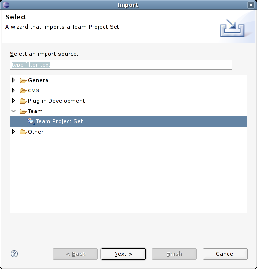
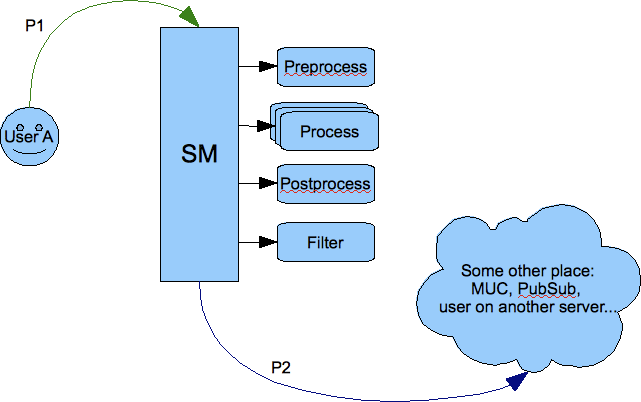
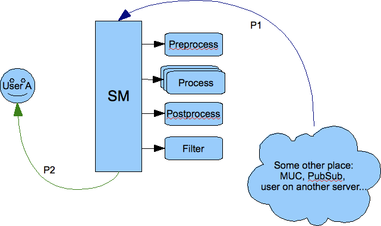
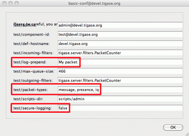
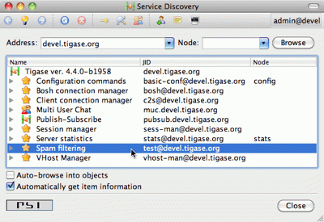
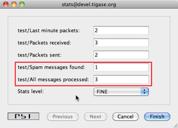
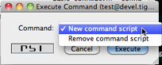

1. Tests
Mateusz Fiolka v2.0, June 2014: Reformatted for AsciiDoc. :toc: :numbered: :website: http://tigase.net/ :Date: 2010-04-06 21:22
1.1. Tests
Tests are very important part of Tigase server development process.
Each release goes through fully automated testing process. All server functions are considered implemented only when they pass testing cycle. Tigase test suite is used for all our automatic tests which allows to define different test scenarios.
There is no tweaking on databases for tests. All databases are installed in standard way and run with default settings. Database is cleared each time before test cycle starts.
There are no modifications to Tigase configuration file as well. All tests are performed on default configuration generated by configuration wizards.
The server is tested in all supported environments:
-
XMLDB - tests with built-in simple XML database. This is simple and efficient solution for small installations. I recommend it for services with up to 100 user accounts although it was successfully tested with 10,000 user accounts.
-
MySQL - tests with MySQL database. Much slower than XMLDB but may handle much more user accounts.
-
PostgreSQL - tests with PostgreSQL database. Again it is much slower than XMLDB but may handle much more user accounts. This is basically exactly the same code as for MySQL database (SQL Connector) but tests are executed to make sure the code is compatible with all supported SQL databases and to compare performance.
-
Distributed - is test for distributed installation where c2s and s2s components run on separated machine which connects using external component protocol (XEP-0114) to another machine with SessionManager running.
1.1.1. Functional Tests
Basic checking if all the functions work at correctly. These tests are performed every time the code is sent to source repository.
Version |
XMLDB |
MySQL |
PGSQL |
Distributed |
3.3.2-b889 |
none |
|||
3.3.2-b880 |
None |
|||
3.0.2-b700 |
||||
2.9.5-b606 |
||||
2.9.3-b548 |
||||
2.9.1-b528 |
||||
2.8.6-b434 |
||||
2.8.5-b422 |
||||
2.8.3-b409 |
||||
2.7.2-b378 |
||||
2.6.4-b300 |
||||
2.6.4-b295 |
||||
2.6.0-b287 |
||||
2.5.0-b279 |
||||
2.4.0-b263 |
||||
2.3.4-b226 |
None |
None |
None |
1.1.2. Performance Tests
Checking whether the function performs well enough.
Version |
XMLDB |
MySQL |
PGSQL |
Distributed |
3.3.2-b889 |
none |
|||
3.3.2-b880 |
None |
|||
3.0.2-b700 |
||||
2.9.5-b606 |
||||
2.9.3-b548 |
||||
2.9.1-b528 |
||||
2.8.6-b434 |
||||
2.8.5-b422 |
||||
2.8.3-b409 |
||||
2.7.2-b378 |
||||
2.6.4-b300 |
||||
2.6.4-b295 |
||||
2.6.0-b287 |
||||
2.5.0-b279 |
||||
2.4.0-b263 |
||||
2.3.4-b226 |
None |
None |
None |
2. Tigase DB Schema Explained
Artur Hefczyc <artur.hefczyc@tigase.net> v2.0, June 2014: Reformatted for AsciiDoc. :toc: :numbered: :website: http://tigase.net/ :Date: 2011-07-12 00:56
The schema basics, how it looks like and brief explanation to all rows can be found in the schema creation script. However, this is hardly enough to understand how it works and how access all the data. There are only 3 basic tables which actually keep all the Tigase server users' data: tig_users, tig_nodes and tig_pairs. Therefore it is not clear at first how the Tigase data is organised.
Before you can understand the Tigase XMPP Server database schema, how it works and how to use it, is it essential to know what were the goals and why it works that way. Let’s start with the API as this gives you the best introduction.
Simplified access can be got through methods:
void setData(BareJID user, String key, String value);
String getData(BareJID user, String key);And more complex version:
void setData(BareJID user, String subnode, String key, String value);
String getData(BareJID user, String subnode, String key, String def);Even though, the API contanins more methods, the rest is more or less variation of presented above. Complete API description for all access methods is available in JavaDoc documentation to UserRepository interface. So we are not going into much details here except the main idea.
We are more or less operate on <*key*, value> pairs for the particular user. The idea befind this was to make the API very simple and also at the same time very flexible, so adding a new plugin or component would not require database schema change, adding new tables, conversion of the DB schema to a new version, etc….
As a result UserRepository interface is exposed to all the Tigase code, mainly components and plugins (let’s call all of them modules), and these modules simply call set/get methods to store or access module specific data.
As plugins or components are developed independently it may easily happen that developer choses the same key name to store some information. To avoid key name conclicts in the database a node concept has been introduced. Therefore, most modules when set/get key value they also provide a subnode part, which in most cases is just XMLNS or some other unique string.
The node thing is a little bit like directory in a filesystem, it may contain subnodes which makes the Tigase database kind of hierarchical structure. And the notation is also similar to filesystem. You use just '/' to separate node levels. In practice you can have database organised like this:
user-name@domain --> (key, value) pairs
|
roster -->
|
item1 --> (key1, value1) pairs.
|
item2 --> (key1, value1) pairs.So to access item’s 1 data from the roster you could call method like this:
getData("user-name@domain", "roster/item1", key1, def1);This is huge convenience for the developer, as he can focus ont he module logic instead of worrying about data storage implementation and organisation. Especially at prototypic phase it speeds development up and allows for a quick experiments with differnent solutions. In practice, accessing user’s roster in such a way would be highly inefficient so the roster is stored a bit differently but you get the idea. Also there is a more complex API used in some places allowing for more direct access to the database and store data in any format optimised for the particular use case.
Right now such a hierarchical structure is implemented on top of SQL databases but initially Tigase’s database was implemented as XML structure, so it was natural and simple.
In the SQL database we simulate hierarchical structure with three tables:
-
tig_users - with main users data, user id (JID), optional password, active flag, creation time and some other basic properties of the account. All of them could be actually stored in tig_pairs but for performance reasons they are in one place to quickly access them with single, simple query.
-
tig_nodes - is a table where the hierarchy is implemented. When Tigase was storing data in XML database the hierarchy was quite complex. However, in SQL database it resulted in a very slow access to the data and now more flat structure is used by most components. Please note, every user’s entry has something called root node, which is represented by root string;
-
tig_pairs - this is the table where all the user’s information is stored in form of the <key, value> pairs.
Ok, so we now know how the data is organised. Now we are going to learn how to access the data directly in the database using SQL queries.
Let’s assume we have a user admin@test-d for whom we want to retrieve the roster. We could simply execute query:
select pval
from tig_users, tig_pairs
where user_id = 'admin@test-d' and
tig_users.uid = tig_pairs.uid and
pkey = 'roster';However, if multiple modules store data under the key roster for a single user, we would receive mutliple results. To access the correct roster we have to know also node hierarchy for this particular key. The main user’s roster is stored under the root node, so the query would look like:
select pval
from tig_users, tig_nodes, tig_pairs
where user_id = 'admin@test-d' and
tig_users.uid = tig_nodes.uid and
node = 'root' and
tig_users.uid = tig_pairs.uid and
pkey = 'roster';How exactly the information is stored in the tig_pairs table depends on the particular module. For the roster it looks a bit like XML content:
<contact jid="all-xmpp-test@test-d" subs="none" preped="simple" name="all-xmpp-test"/>3. Basic Information
Artur Hefczyc <artur.hefczyc@tigase.net> v2.0, June 2014: Reformatted for AsciiDoc. :toc: :numbered: :website: http://tigase.net/ :Date: 2010-04-06 21:22
3.1. Tigase Server Elements
To make it easier to get into the code below are defined basic terms in Tigase server world and there is a brief explanation how the server is designed and implemented. This document also points you to basic interfaces and implementations which can be used as example code reference.
Logically all server code can be divided into 3 kinds of modules: components, plug-ins and connectors.
-
Component is the main element of Tigase server is. Component is a bigger piece of code which can have separate address, can receive and send stanzas, can be configured and respond to numerous events. Sample components implemented for Tigase server are: c2s connection manager, s2s connection manager, session manager, XEP-0114 - external component connection manager, MUC - multi user char rooms.
-
Plug-in is usually small piece of code responsible for processing particular XMPP stanza. It doesn’t have own address. As a result of stanza processing it can produce new XMPP stanzas. Plug-ins are loaded by session manager component or c2s connection manager component. Sample plug-ins are: vCard stanza processing, jabber:iq:register to register new user accounts, presence stanza processing, jabber:iq:auth for non-sasl authentication and so on….
-
Connector is a module responsible to for access to data repository like database, LDAP to store and retrieve user data. There are 2 kinds of connectors: authentication connectors and user data connectors. Both of them are independent and can connect to different data sources. Sample connectors are: JDBC database connector, XMLDB - embedded database connector, Drupal database connector, LibreSource database connector.
There is API defined for each kind of above modules and all you have to do is implementation of specific interface. Then the module can be loaded to the server based on configuration settings. There are also available abstract classes implementing these interfaces to make development easier.
Here is a brief list of all interfaces to look at and for more details you have to refer to the guide for specific kind of module.
3.1.1. Component
This is list of interfaces to look at when you work on a new component:
-
tigase.server.ServerComponent - this is the very basic interface for component. All components must implement it.
-
tigase.server.MessageReceiver - this interface extends
ServerComponentand is required to implement by components which want to receive data packets like session manager, c2s connection manager and so on… -
tigase.conf.Configurable - implementing this interface is required to make it configurable. For each object of this type configuration is pushed to it at any time at runtime. This is necessary to make it possible to change configuration at runtime. Implementation should be careful enough to handle this properly.
-
tigase.disco.XMPPService - Objects of which inherit this interface can respond to "ServiceDiscovery" requests.
-
tigase.stats.StatisticsContainer - Objects which inherits this type can return runtime statistics. Any object can collect job statistics and implementing this interface guarantees that statistics will be presented in consisted way to user who wants to see them.
Instead of implementing above interfaces directly I would recommend to extend one of existing abstract classes which take care of the most of "dirty and boring" stuff. Here is a list the most useful abstract classes:
-
tigase.server.AbstractMessageReceiver - implements 4 basic interfaces:
ServerComponent,MessageReceiver,ConfigurableandStatisticsContainer. It also manages internal data queues using own threads which prevents from dead-locks. It offers even-driven data processing which means whenever packet arrivesabstract void processPacket(Packet packet);method is called to process it. You have to implement this abstract method in your component. If your component wants to send a packet (in response to data it received for example) it needs to callboolean addOutPacket(Packet packet)method. This is it, I mean basic implementation.
-
tigase.server.ConnectionManager - this is an extension of
AbstractMessageReceiverabstract class. As its name says this class takes care of all network connection management stuff. If your component needs to send and receive data directly from the network (like c2s connection, s2s connection or external component) you should use this implementation as a basic class. It takes care of all things related to networking, I/O, reconnecting, listening on socket, connecting and so on. If you extend this class you have to expect data coming from to sources: from theMessageRouterand this is whenabstract void processPacket(Packet packet);method is called and from network connection and then
abstract Queue processSocketData(XMPPIOService serv);method is called.
3.1.2. Plug-in
All Tigase plugins currently implemented are located in package: tigase.xmpp.impl. You can use this code as a sample code base. There are 3 types of plug-ins and they are defined in interfaces located in tigase.xmpp package:
-
XMPPProcessorIfc - the most important and basic plug-in. This is the most common plug-in type which just processes stanzas in normal mode. It receives packets, processes them on behalf of the user and returns resulting stanzas.
-
XMPPPreprocessorIfc -
-
XMPPPostprocessorIfc -
3.2. Connector
3.2.1. Data, Stanzas, Packets - Data Flow and Processing
Data received from the network are read from the network sockets as bytes by code in tigase.io package. Bytes then are changed into characters in classes of tigase.net package and as characters they are put to XML parser (tigase.xml) which turns them to XML DOM structures.
All data inside the server are exchanged in XML DOM form as this is the format used by XMPP protocol. For basic XML data processing (parsing characters stream, building DOM, manipulate XML elements and attributes) we use Tigase XML parser and DOM builder.
Each stanza is stored in tigase.xml.Element object. Every Element can contain any number of child Elements and any number of attributes. You can access all these data through the class API.
To simplify some, most common operations Element is wrapped in tigase.server.Packet class which offer another level of API for the most common operations like preparation of response stanza based on the element it contains (swap to/from values, put type=result attribute and so on…).
4. Why the most recent JDK?
Artur Hefczyc <artur.hefczyc@tigase.net> v2.0, June 2014: Reformatted for AsciiDoc. :toc: :numbered: :website: http://tigase.net/ :Date: 2010-04-06 21:22
Well there are many reasons but the main is that I am the only one developer working on source code at the moment. So the whole approach is to make life easier for me, make the project easier to maintain and development more efficient.
Here is the list:
-
Easy to maintain - No third-party libraries are used for the project which makes this project much easier to maintain. I don’t have to worry about compatibility beetwen particular version of library used I don’t have to worry about upgrading my environment if library version change and old version is not supported anymore. If I change machine on which I do development the only thing I need is just to download JDK.
-
Easy to deploy - Another reason to not use third-party tools. Make it easier for end-user to install and use the server.
-
Efficient development - As no third-party libraries are used I need either to implement many things on my own or use as much as possible of JDK functionality. And this is exactly what I do. I try to use as much as possible of existing library provided with JDK and the rest is implemented on my own.
What features of JDK-1.5 are critical for Tigase development? Why I can’t simply reimplement some code to make it compatible with earlier JDK versions?
-
Non-blocking I/O for SSL/TLS - This is functionality which can’t be simply reimplemented for JDK-1.4. And as whole server uses NIO it doesn’t make sense to use blocking I/O for SSL and TLS.
-
SASL - This could be reimplemented for JDK-1.4 with not that big effort.
-
Concurrent package - This could be reimplemented for JDK-1.4 but the effort could be high. And this is critical part of the server as it uses multi-threading and concurrent processing.
-
Security package - There number of extensions to security package which make my live easier and development more efficient.
I think above list is enough to decide to use JDK-1.5. But why JDK-1.6? Well, the is actually only 1 main reason so far:
-
LinkedHashMap - in JDK-1.6 is a basement for the Tigase cache implementation.
-
Light HTTP server - JDK-1.6 offers built-in light HTTP server which is needed to implement HTTP binding (JEP-0124) and HTTP user interface to monitor server activity and work with the server configuration.
5. Hack Tigase Jabber/XMPP Server in Eclipse
Bartosz Malkowski <bmalkowski@tigase.pl> v2.0, June 2014: Reformatted for AsciiDoc. :toc: :numbered: :website: http://tigase.net/ :Date: 2010-04-06 21:22
If you want to write a code for Tigase server you might want to use Eclipse. Here is a guide how to start working on source code using this IDE.
All you need to start is:
-
Installed and working copy of Eclipse
-
Installed and working copy of JDK-1.6.0Beta2 at least.
-
Installed and working Subclipse pluggin for Eclipse.
5.1. JDK-1.6.0 Setup
After installation JDK-1.6.0 in your operating system, run Eclipse and select Window/Preferences.

In section Java/Installed JREs press Add button. In the new opened window enter path to installed JDK-6. In my case it is /opt/jdk1.6.0. It also good to set name to sun-jdk-1.6.0.
5.2. Subclipse Installation
As Eclipse doesn’t contain built-in support for Subversion repositories you have to add new plugin. Detailed instruction for Subclipse installation is on page:
5.3. Project Import
From menu File in Eclipse execute Import. Next, highlight section Team/Team Project Set and press Next.

Enter file name tigase-server.psf in field File and press Finish.
The file is attached to this article.
Because kobit has objections to add Eclipse configuration files to subversion repository you have to do it on your own.
That’s it. Start hacking now!
6. API changes in the Tigase Server 5.x
Artur Hefczyc <artur.hefczyc@tigase.net> v2.0, June 2014: Reformatted for AsciiDoc. :toc: :numbered: :website: http://tigase.net/ :Date: 2010-01-06 20:22
The API changes can affect you only if you develop own code to run inside the Tigase server. The changes are not extensive but in some circumstances may require many simple changes in a few files.
All the changes are related to introducing tigase.xmpp.JID and tigase.xmpp.BareJID classes. It is recommended to use them for all operations performed on the user JID instead of the String class which was used before changes.
There are a few advantages of using the new classes. First of all they do all the user JID checking and parsing, they also perform stringprep processing. Therefore if you use data kept by instance of the JID or BareJID you can be sure they are valid and correct.
These are not all advantages however. Working with a profiler and optimising the Tigase code I noticed that a lot of CPU power is used by JID parsing code. JIDs and parts of the JIDs are used in many places of the stanza processing and the parsing is performed over and over again in all these places, wasting CPU cycles, memory and time. Therefore, great benefits from these new class are in performance if once parsed JIDs are reused in all further stanza processing.
This is where the tigase.server.Packet class comes in handy. Instance of the Packet class encloses XML stanza and pre-parses some, the most commonly used elements of the stanza. Stanza source and destination addresses are among them. As an effect there are all new methods available in the class:
JID getStanzaFrom();
JID getStanzaTo();
JID getFrom();
JID getTo();
JID getPacketFrom();
JID getPacketTo();Whereas following methods are still available but have been deprecated:
String getElemFrom();
String getElemTo();Please refer to the JavaDoc documentation for the Packet class and methods to learn all the details of these methods and difference between them.
Another difference is that you can no longer create the Packet instance using a constructor. Instead there are a few factory methods available:
static Packet packetInstance(Element elem);
static Packet packetInstance(Element elem,
JID stanzaFrom, JID stanzaTo);Again, please refer to the JavaDoc documentation for all the details. The main point of using these methods is that they actually return an instance of one of the following classes instead of the Packet class: Iq, Presence or Message.
There is also a number of utility methods helping with creating a copy of the Packet instance preserving as much pre-parsed data as possible:
Packet copyElementOnly();
Packet errorResult(...);
Packet okResult(...);
Packet swapFromTo();
Packet swapStanzaFromTo();Again, I tried to keep the JavaDoc comments as complete as possible, have a look. In case of doubts please contact me and will add missing information to the documentation.
The main point is to reuse JID or BareJID instances in your code as much as possible. You never know, your code may run in highly loaded systems with throughput of 100k XMPP packets per second.
Another change. This one a bit risky as it is very difficult to find all places where this could be used. There are several utility classes and methods which accept source and destination address of a stanza and produce something. There was a great confusion with them, as in some of them the first was the source address and in others the destination address. I have re-factored all the code to keep the parameter order the same in all places. Right now the policy is: source address first. Therefore in all places where there was a method:
Packet method(String to, String from);it has been changed to:
Packet method(JID from, JID to);As far as I know most of these method were used only by myself so I do not expect much trouble for other developers.
7. Server Compilation
Artur Hefczyc <artur.hefczyc@tigase.net> v2.0, June 2014: Reformatted for AsciiDoc. :toc: :numbered: :website: http://tigase.net/ :Date: 2010-04-06 21:22
List of documents describing how to work with sources and how to compile them.
-
Tigase XMPP Server 5.2.0 and Later - Compilation and Generating Distribution Packages
-
Tigase Packages Dependency Change - Server Compilation Version 4.x or Later
-
Server Compilation - Version 2.x and 3.x
-
Using Maven
8. Tigase XMPP Server 5.2.0 and later - Compilation and Generating Distribution Packages
Wojciech Kapcia <wojciech.kapcia@tigase.org> v2.0, June 2014: Reformatted for AsciiDoc. :toc: :numbered: :website: http://tigase.net/ :Date: 2013-08-08 12:42
Starting with version 5.2.0 Tigase Server we switch for generating distribution packages from Ant to Maven. This will allow better depencency management as well as build repeatability.
Guides:
A Very Short Maven Guide Maven 2.x Support
8.1. Distribution Packages
Starting from version 5.2.0 there will be two separate archives:
-
minimal version (-dist) containing only tigase-server, tigase-xmltools and tigase-utils
-
max version (-dist-max) containing all additional tigase components (MUC, PubSub, HTTP API, OSGi support, etc.) as well as dependencies required by those components.
They will be available as both zip and tarball.
8.2. Building Server and Generating Packages
After cloning tigase-server repository:
git clone https://repository.tigase.org/git/tigase-server.git
cd tigase-serverYou compile server with maven using project distribution profile (dist):
mvn -Pdist -f modules/master/pom.xml clean installThis will:
-
compile server
-
generate javadoc
-
grab all latest versions of all declared depencencies and put them in jars/ directory
-
create both types of distribution packages (-dist and -dist-max) and place them in pack/ directory
In order to create instalator packages you have to execute two shell scripts:
./scripts/installer-prepare.sh
./scripts/installer-generate.shHowever, in order for them to succeed you have to build server first using maven as described earlier. You should also have git, python2, docutils and LaTeX distribution installed (please see src/main/izpack/README.txt for details).
9. Tigase Packages Dependency Change - Server Compilation Version 4.x or Later
Artur Hefczyc <artur.hefczyc@tigase.net> v2.0, June 2014: Reformatted for AsciiDoc. :toc: :numbered: :website: http://tigase.net/ :Date: 2010-04-06 21:22
The dependency for Tigase Utils Package has changed. This is important for everybody who builds the Tigase server manually from sources using Ant tool. The Maven handles all the dependencies automatically and scripts have been updated.
Please keep reading for more details how to compile the server from sources in current SVN repositories.
If you have an old Tigase MUC or Tigase Extras package lying in the server/libs/ directory please remove it now. You have to update it too and copy it over to the server/jars/ directory after you completed steps below.
For all those who build the server from sources manually using Ant here is a short guide:
-
Checkout all the sources first:
-
Build the Tigase XMLTools and copy the jar file over to the utils and server libs/ directory
-
cd xmltools -
ant clean jar-dist -
cp jars/tigase-xmltools.jar ../utils/libs -
cp jars/tigase-xmltools.jar ../server/libs
-
-
Build the Tigase Utils and copy the jar file to the server libs/ directory
-
cd ../utils -
ant clean jar-dist -
cp jars/tigase-utils.jar ../server/libs
-
-
Build the Tigase Server binary
-
cd ../server -
ant clean jar-dist
-
This is a very short guide but I hope it helps. If you have any problems, please let me know.
Addendum: starting with version 5.2.0 all libraries and jar files for the server are in jars/ directory; however with that version we strongly encourage to switch to maven build system as we are phasing out Ant - please follow guide Tigase XMPP Server 5.2.0 and Later - Compilation and Generating Distribution Packages
10. Server Compilation - version 2.x and 3.x
Artur Hefczyc <artur.hefczyc@tigase.net> v2.0, June 2014: Reformatted for AsciiDoc. :toc: :numbered: :website: http://tigase.net/ :Date: 2010-04-06 21:22
Tigase XMPP Server version 4.x or later need slightly different procedure to compile.
Although the server doesn’t need any third-party libraries apart from Java 6.0 (1.6beta2) compliant JVM to run, Apache Ant tool and Ant-Contrib are used to build binaries of Tigase applications and libraries. Another tools which is needed is a Subversion which is required to download the most recent sources from Tigase repository.
To make it a list, again:
-
JDK-1.6 - Java SDK to compile and run Tigase applications.
-
Apache Ant - the build tool
-
Ant-Contrib - Apache Ant extensions used by build script (ant-contrib on gentoo, and ant-optional on Ubuntu)
-
Subversion - version control system used by Tigase.
Install all above in standard way, appropriate for your operating system. It is enough if they are available in system PATH variable so you can execute them from command line.
Tigase Server has been divided into a few smaller subprojects some time ago. In order to have it all working together we need to do compile them one by one. Here is step by step instruction how to do it. Assuming you already run command line shell and changed to directory where you want to keep all Tigase files do as follows:
-
Get tigase-utils sources and compile them:
svn co https://svn.tigase.org/reps/tigase-utils/trunk/ utils cd utils ant clean jar cd .. -
Get tigase-xmltools sources and compile them:
svn co https://svn.tigase.org/reps/tigase-xmltools/trunk/ xmltools cd xmltools ant clean jar cd .. -
Get tigase-server sources and compile them:
svn co https://svn.tigase.org/reps/tigase-server/trunk/ server cp xmltools/jars/tigase-xmltools.jar server/libs/ cp utils/jars/tigase-utils.jar server/libs/ cd server ant clean jar
Now you have Tigase Server compiled and ready to run. To check and make sure it is indeed compiled and can be executed you can try to start the server. Assuming you are in the directory where you executed the last compilation command for server sources run following command:
java -cp libs/tigase-utils.jar:libs/tigase-xmltools.jar:jars/tigase-server.jar tigase.server.XMPPServerIf it all worked correctly you should see output similar to presented below:
2006-10-04 17:00:38 ConfigRepository.init() WARNING: Can not open existing configuration file
2006-10-04 17:00:38 XMLDB.setupNewDB() INFO: Create empty DB.
2006-10-04 17:00:38 MessageRouter.addRegistrator() INFO: Adding registrator: Configurator
2006-10-04 17:00:38 MessageRouter.addComponent() INFO: Adding component: Configurator
2006-10-04 17:00:38 Configurator.setupLogManager() WARNING: DONE
2006-10-04 17:00:38 Configurator.setupLogManager() WARNING: DONE
2006-10-04 17:00:39 XMLRepository.() WARNING: Can not open existing user repository fileNow you can proceed to configuration document to learn how to tweak server settings or you can just start hacking server code and do experiments.
include::text/Development_Guide_11_-_Using_Maven.asciidoc
11. Maven 2.x Support
Artur Hefczyc <artur.hefczyc@tigase.net> v2.0, June 2014: Reformatted for AsciiDoc. :toc: :numbered: :website: http://tigase.net/ :Date: 2010-04-06 21:22
Addendum: for a more recent guide please follow Tigase XMPP Server 5.2.0 and Later - Compilation and Generating Distribution Packages.
Thanks to bmalkow you can now build Tigase server from sources using Maven 2.x tool. This should greatly simplify first steps with Tigase code and it was requested by many of those trying to get the server running from sources. Maven repository with Tigase packages is located at address: maven.tigase.org. Now all you need to compile sources and generate packages needed to run the server is just a few simple steps below:
-
Download and install Maven 2.x
-
Checkout Tigase server sources from Subversion repository:
svn co https://svn.tigase.org/reps/tigase-server/trunk/ tigase-server -
Now go to directory with server code:
cd tigase-server -
And run maven command to generate server package:
mvn assembly:assembly -
After maven finished his work there should be new subdirectory created: target. Go to this directory now:
cd target/ -
and list content of this directory. On Linux, Unix system:
ls -lOn MS Windows system:
dir -
You should see at least 2 files like these:
tigase-server-2.4.0-SNAPSHOT-prodenv.tar.gz tigase-server-2.4.0-SNAPSHOT-prodenv.zip -
Unpack one of these files whichever you like:
tar -xzvf tigase-server-2.4.0-SNAPSHOT-prodenv.tar.gzor
unzip tigase-server-2.4.0-SNAPSHOT-prodenv.zip -
New directory will be created in our case it will be:
tigase-server-2.4.0-SNAPSHOT/. Now go to this directory:cd tigase-server-2.4.0-SNAPSHOT/ -
Now almost everything is ready to run the server. Almost because sometimes on Unix like (including Linux) operating systems you have to change script execution bit before you can run it:
chmod u+x bin/* -
Now you can run Tigase server:
./bin/tigase.sh run etc/tigase.confYou can get a few warnings about missing configuration file (which will be automatically created) and user repository file (which will be automatically created when you register first user).
For your convenience there are a few other startup files in etc/ directory. You can look and modify them according to your needs.
12. A Very Short Maven Guide
Artur Hefczyc <artur.hefczyc@tigase.net> v2.0, June 2014: Reformatted for AsciiDoc. :toc: :numbered: :website: http://tigase.net/ :Date: 2010-04-06 21:22
If you don’t use Maven at all or use it once a year you may find the document a useful maven commands reminder:
12.1. Snapshot Compilation and Snapshot Package Generation
-
mvn compile- compilation of the snapshot package -
mvn package- create snapshot jar file -
mvn install- install in local repository shanpshot jar file -
mvn deploy- deploy to the remote repository snapshot jar file
13. Generating Tigase Installer
Artur Hefczyc <artur.hefczyc@tigase.net> v2.0, June 2014: Reformatted for AsciiDoc. :toc: :numbered: :website: http://tigase.net/ :Date: 2010-04-06 21:22
To generate installer:
-
Install chosen version of IzPack including source code.
-
In order to compile custom Tigase panels you need to first compile IzPack classes. You can use the included
build.xmlwhich is in the src directory of IzPack install. Just enter this dir and type:ant all -
Depending on the IzPack version classes will be compiled directly into the
src/libdirectory or_builddirectory of IzPack. You may need to tweak thebuild.xmlfile which is in the same dir as thereadmeand point to the directory where IzPack compiled classess reside.<!-- fragment --> <classpath> <pathelement location="java"/> <!-- tweak below fragment --> <pathelement location="${installer.path}/_build"/> <pathelement location="${installer.path}/bin/panels/TargetPanel.jar"/> </classpath> -
Make sure that the bin/panels directory of IzPack is writable by
generate-installer.shscript. Compiled custom panels will be placed here before running installer compiler. -
Modify the
script/generate-installer.sh. Change theIZPACK_DIRvariable to point to the IzPack instalation directory e.g.IZPACK_DIR="/usr/local/IzPack421" -
To start the installation process run the
scripts/generate-installer.shfile you will find in the main server source code directory. You should start it from the server root dir. -
Generated files (jar and exe) will be placed in the packages dir of Tigase codebase.
14. Plugin Development
Artur Hefczyc <artur.hefczyc@tigase.net> v2.0, June 2014: Reformatted for AsciiDoc. :toc: :numbered: :website: http://tigase.net/ :Date: 2010-04-06 21:22
This is a set of documents explaining details what is plugin, how it is designed and how it works inside the Tigase server. The last part of the documentation explains step by step creating the code for a new plugin.
-
SASL Custom Mechanisms and Configuration
-
How Packets are Processed by the SM and Plugins
-
Writing Plugin Code
-
Plugin Configuration
15. SASL Custom Mechanisms and Configuration
Bartosz Malkowski <bmalkowski@tigase.pl> v2.0, June 2014: Reformatted for AsciiDoc. :toc: :numbered: :website: http://tigase.net/ :Date: 2013-01-23 03:54
This API is available from Tigase XMPP Server version 5.2.0 or our current master branch.
Note that API is under active development. This description may be updated at any time.
15.1. Basic SASL Configuration
SASL implementation in the Tigase XMPP Server is compatible with Java API.The same exact interfaces are used.
The SASL implementation consists of following parts:
-
mechanism
-
CallbackHandler
Properties list for SASL plugin (sess-man/plugins-conf/urn\:ietf\:params\:xml\:ns\:xmpp-sasl):
Property |
Description |
factory |
A factory class for SASL mechanisms. Detailed description at Mechanisms configuration |
callbackhandler |
A default callback handler class. Detailed description at CallbackHandler configuration |
callbackhandler-${MECHANISM} |
A callback handler class for a particular mechanism. Detailed description at CallbackHandler configuration |
mechanism-selector |
A class for filtering SASL mechanisms available in a stream. Detailed description at Selecting mechanisms |
15.1.1. Mechanisms Configuration
To add a new mechanism, a new factory for the mechanism has to be registered. It can be done with a new line in the init.properties file like this one:
sess-man/plugins-conf/urn\:ietf\:params\:xml\:ns\:xmpp-sasl/factory=com.example.OwnFactory
The class must implement 'SaslServerFactory' interface. All mechanisms returned by 'getMechanismNames()' method will be registered automatically.
The factory which is available and registered by default is 'tigase.auth.TigaseSaslServerFactory' which provides PLAIN and ANONYMOUS mechanisms.
15.1.2. CallbackHandler Configuration
The CallbackHandler is a helper class used for loading/retrieving authentication data from data repository and providing them to a mechanism.
To register a new callback handler a new line in the init.properties file like this one has to be added:
sess-man/plugins-conf/urn\:ietf\:params\:xml\:ns\:xmpp-sasl/callbackhandler=com.example.DefaultCallbackHandler
It is also possible to register different callback handlers for different mechanisms:
sess-man/plugins-conf/urn\:ietf\:params\:xml\:ns\:xmpp-sasl/callbackhandler-PLAIN=com.example.PlainCallbackHandler
sess-man/plugins-conf/urn\:ietf\:params\:xml\:ns\:xmpp-sasl/callbackhandler-OAUTH=com.example.OAuthCallbackHandler
During authentication process, the Tigase server always checks for a handler specific to selected mechanisms, and if there is no specific handler a default one is used.
15.1.3. Selecting Mechanisms Available in the Stream
Interface 'tigase.auth.MechanismSelector' is used for selecting mechanisms available in a stream. Method 'filterMechanisms()' should return a collection with mechanisms available based on:
-
all registered SASL factories
-
XMPP session data (from
'XMPPResourceConnection'class)
The default selector returns mechanisms from the default Tigase’s factory ('TigaseSaslServerFactory') only.
It is possible to use a custom selector by specifying it’s class int the init.properties file:
sess-man/plugins-conf/urn\:ietf\:params\:xml\:ns\:xmpp-sasl/mechanism-selector=com.example.OwnSelector
15.2. Logging/Authentication
After the XMPP stream is opened by a client, the server checks which SASL mechanisms are available for the XMPP session. Depending on whether the stream is encrypted or not, depending on the domain, the server can present different available authentication mechanisms. MechanismSelector is responsible for choosing mechanisms. List of allowed mechanisms is stored in the XMPP session object.
When the client/user begins authentication procedure it uses one particular mechanism. It must use one of the mechanisms provided by the server as available for this session. The server checks whether mechanisms used by the client is on the list of allowed mechanisms. It the check is successful, the server creates 'SaslServer' class instance and proceeds with exchanging authentication information. Authentication data is different depending on the mechanism used.
When the SASL authentication is completed without any error, the Tigase server should have authorized user name or authorized BareJID. In the first case, the server automatically builds user’s JID based on the domain used in the stream opening element in 'to' attribute.
If, after a successful authentication, method call: 'getNegotiatedProperty("IS_ANONYMOUS")\' returns 'Boolean.TRUE' then the user session is marked as anonymous. For valid and registered users this can be used for cases when we do not want to load any user data such as roster, vcard, privacy lists and so on. This is a performance and resource usage implication and can be useful for use cases such as support chat. The authorization is performed based on the client database but we do not need to load any XMPP specific data for the user’s session.
More details about implementation can be found at custom mechanisms development.
15.3. Custom Mechanisms Development
15.3.1. Mechanism
'getAuthorizationID()\' method from 'SaslServer' class should return bare JID authorized user. In case that the method returns only user name such as romeo for example, the server automatically appends domain name to generate a valid BareJID: romeo@example.com. In case the method returns a full, valid BareJID, the server does not change anything.
'handleLogin()\' method from 'SessionManagerHandler' will be called with user’s Bare JID provided by getAuthorizationID() (or created later using stream domain name).
15.3.2. CallbackHandler
For each session authorization, the server creates a new and separate, empty handler. Factory which creates handler instance allows to inject different objects to the handler, depending on interfaces implemented by the handler class:
-
AuthRepositoryAware- injectsAuthRepository; -
DomainAware- injects domain name within which the user attempts to authenticate -
NonAuthUserRepositoryAware- injectsNonAuthUserRepository, although I have no idea what for…
15.3.3. General Remarks
JabberIqAuth used for non-SASL authentication mechanisms uses the same callback as the SASL mechanisms.
Methods 'auth' in 'Repository' interfaces will be deprecated. These interfaces will be treated as user details providers only. There will be new methods available which will allow for additional login operations on the database such as last successful login recording and so on…
15.3.4. Known Problems
Because JabberIqAuth is initialized separatelly, we strongly recommend to use more general prefix in init.properties:
sess-man/plugins-conf/${KEY}=${VALUE}instead of
sess-man/plugins-conf/urn\:ietf\:params\:xml\:ns\:xmpp-sasl/${KEY}=${VALUE}If JabberIqAuth is disabled, then you don’t care about it.
16. How Packets are Processed by the SM and Plugins
Artur Hefczyc <artur.hefczyc@tigase.net> v2.0, June 2014: Reformatted for AsciiDoc. :website: http://tigase.net/ :Date: 2010-04-06 21:22
For the Tigase server plugin development it is important to understand how it all works. There are different kind of plugins responsible for processing packets at different stages of the data flow. Please read the introduction below before proceeding to the actual coding part.
16.1. Introduction
In the Tigase server plugins are pieces of code responsible for processing particular XMPP stanza. A separate plugin might be responsible for processing messages, a different one for processing presences, and there might a separate plugins responsible for iq roster, different for iq version and so on.
A plugin provides information about what exact XML element(s) name(s) with xmlns it is interested in. So you can create a plugin which is interested in all packets containing caps child.
There might be no plugin for a particular stanza element and then a default actions is used which is simple forwarding stanza to a destination address. There might be also more than one plugin for a specific XML element and then they all process the same stanza simultaneously in separate threads so there is no guarantee on the order in which the stanza is processed by a different plugins.
Each stanza goes through the Session Manager component which processes packets in a few steps. Have a look at the picture below:

The picture shows that each stanza is processed by the session manager in 4 steps:
-
Pre-processing - all loaded pre-processors receive the packet for processing. They work within session manager thread and they have no internal queue for processing. As they work within Session Manager thread it is important that they limit processing time to absolute minimum as they may affect the Session Manager performance The intention for the pre-processors is to allow them for packet blocking. If the pre-processing result is true then the packet is blocked and no further processing is performed.
-
Processing - this is the next step the packet gets through if it wasn’t blocked by any of the pre-processors. It gets inserted to all processors queues which requested interest in this particular XML element. Each processor works in a separate thread and has own internal fixed size processing queue.
-
If there is no processor for the stanza then the packet goes through all post-processors. The last post-processor in built into session manager post-processor which tries to apply a default action to a packet which hasn’t been processed in step 2. Normally the default action is just forwarding the packet to a destination. Most commonly it is applied to <message/> packets.
-
Finally, if any of above 3 steps produced output/result packets all of them go through all filters which may or may not block them.
Important thing to note is that we have two kinds or two places where packets may be blocked or filtered out. One place is before packet is processed by the plugin and another place is after processing where filtering is applied to all results generated by the processor plugins.
It is also important to note that session manager and processor plugins act as packet consumers. The packet is taken for processing and once processing is finished the packet is destroyed. Therefore to forward a packet to a destination one of the processor must create a copy of the packet, set all properties and attributes and return it as a processing result. Of course processor can generate any number of packets as a result. Result packets can be generated in any of above 4 steps of the processing. Have a look at the picture below:

If the packet P1 is send outside of the server, for example to a user on another server or to some component (MUC, PubSub, transport) then one of the processor must create a copy P2 of the packet and set all attributes and destination addresses correctly. Packet P1 has been consumed by the session manager during processing and a new packet has been generated by one of the plugins.
The same of course happens on the way back from the component to the user:

The packet from the component is processed and one of the plugins must generate a copy of the packet to deliver it to the user. Of course packet forwarding is a default action which is applied when there is no plugin for the particular packet.
It is implemented this way because the input packet P1 can be processed by many plugins at the same time therefore the packet should be in fact immutable and must not change once it got to the session manager for processing.
The most obvious processing workflow is when a user sends request to the server and expects a response from the server:

This design has one surprising consequence though. If you look at the picture below showing communication between 2 users you can see that the packet is copied twice before it is delivered to a final destination:

The packet has to be processed twice by the session manager. The first time it is processed on behalf of the User A as an outgoing packet and the second time it is processed on behalf of the User B as an incoming packet.
This is to make sure the User A has permission to send a packet out and all processing is applied to the packet and also to make sure that User B has permission to receive the packet and all processing is applied. If, for example, the User B is offline there is offline message processor which should put the packet to a database.
17. Writing Plugin Code
Artur Hefczyc <artur.hefczyc@tigase.net> v2.0, June 2014: Reformatted for AsciiDoc. :toc: :numbered: :website: http://tigase.net/ :Date: 2010-04-06 21:22
Previous guide describes a basic idea behind the XMPP stanza processing in the session manager. As it was already point out the processing takes place in 4 steps. A different kind of plugin is responsible for each step of processing:
-
XMPPPreprocessorIfc - is the interface for packets pre-processing plugins.
-
XMPPProcessorIfc - is the interface for packets processing plugins.
-
XMPPPostprocessorIfc - is the interface for packets post-processing plugins.
-
XMPPPacketFilterIfc - is the interface for processing results filtering.
If you look inside any of these interfaces you find only a single method. This is it. This is where all the packet processing takes place. All of them take a similar set of parameters and below is a description for all of them:
-
Packet packet - packet is which being processed. This parameter may never be null. Even though this is not immutable object it mustn’t be altered. None of it’s fields or attributes can be changed during processing.
-
XMPPResourceConnection session - user session which keeps all the user session data and also gives an access to the user’s repository data. It allows for storing information in a permanent storage or in memory only during the live of the online session. This parameter can be null if there is no online user session at the time of the packet processing.
-
NonAuthUserRepository repo - this is a user data storage which is normally used when the user session (parameter above) is null. This is repository allows for a very restricted access only. It allows for storing some user private data (doesn’t allow overwriting existing data) like messages for offline users and it also allows for reading user public data like VCard.
-
Queue<Packet> results - this a collection with packets which have been generated as input packet processing results. Regardless a response to a user request is sent or the packet is forwarded to it’s destination it is always required that a copy of the input packet is created and stored in the results queue.
-
Map<String, Object> settings - this map keeps plugin specific settings loaded from the Tigase server configuration. In most cases it is unused, however if the plugin needs to access an external database that this is a way to pass database connection string to the plugin.
After a closer look in some of the interfaces you can see that they extend another interface: XMPPImplIfc which provides a basic meta information about the plugin implementation. Please refer to JavaDoc documentation for all details.
For purpose of this guide we are implementing a simple plugin handling all <message/> packets, that is forwarding packets to the destination address. Incoming packets are forwarded to the user connection and outgoing packets are forwarded to the external destination address. This message plugin is actually implemented already and it is available in our Git repository. The code has some comments inside already but this guide goes deeper into the implementation details.
First of all you have to chose what kind of plugin you want to implement. If this is going to be a packet processor you have to implement XMPPProcessorIfc interface, if this is going to be pre-processor then you have to implement XMPPPreprocessorIfc interface. Of course your implementation can implement more than one interface, even all. It depends on your use case and needs. There are also two abstract helper classes from which you should use one as a base for all you plugins XMPPProcessor or AnnotatedXMPPProcessor for annotation support.
17.1. Using annotation support
The class declaration should look like this (assuming you implement just packet processor):
public class Message extends AnnotatedXMPPProcessor
implements XMPPProcessorIfcThe first thing to create is the plugin ID. This is a unique string which you put in the configuration file to tell the server to load and use the plugin. In most cases you can use XMLNS if the plugin wants packets with elements with a very specific name space. Of course there is no guarantee there is no other packet for this specific XML element too. As I want to process all messages and I don’t want to spend whole day on thinking about a cool ID let’s say our ID is: 'message'.
A plugin informs about it’s using static ID field and @Id annotation placed on class:
@Id(ID)
public class Message extends AnnotatedXMPPProcessor
implements XMPPProcessorIfc {
protected static final String ID = "message";
}As I mentioned before such a plugin receives only this kind of packets for processing which it is interested in. My plugin is interested only in packets with <message/> elements and only if they are in "jabber:client" namespace. To indicate all supported elements and namespaces we have to add 2 more annotations:
@Id(ID)
@Handles({
@Handle(path={ "message" },xmlns="jabber:client")
})
public class Message extends AnnotatedXMPPProcessor
implements XMPPProcessorIfc {
private static final String ID = "message";
}17.2. Using older non-annotation based implementation
The class declaration should look like this (assuming you implement just packet processor):
public class Message extends XMPPProcessor
implements XMPPProcessorIfcThe first thing to create is the plugin ID. This is a unique string which you put in the configuration file to tell the server to load and use the plugin. In most cases you can use XMLNS if the plugin wants packets with elements with a very specific name space. Of course there is no guarantee there is no other packet for this specific XML element too. As I want to process all messages and I don’t want to spend whole day on thinking about a cool ID let’s say our ID is: 'message'.
A plugin informs about it’s ID using following code:
private static final String ID = "message";
public String id() { return ID; }As I mentioned before such a plugin receives only this kind of packets for processing which it is interested in. My plugin is interested only in packets with <message/> elements and only if they are in "jabber:client" namespace. To indicate all supported elements and namespaces we have to add 2 more methods:
public String[] supElements() {
return new String[] {"message"};
}
public String[] supNamespaces() {
return new String[] {"jabber:client"};
}17.3. Implementation of processing method
Now we have our plugin prepared for loading it to the Tigase server. The next step is the actual packet processing method. For the complete code, please refer to the plugin in the Git. I will only comment here on elements which might be confusing or add a few more lines of code which might be helpful in your case.
1
2
3
4
5
6
7
8
9
10
11
12
13
14
15
16
17
18
19
20
21
22
23
24
25
26
27
28
29
30
31
32
33
34
35
36
37
38
39
40
41
42
43
44
45
46
47
48
49
50
51
52
53
54
55
56
57
58
59
60
61
62
63
64
65
66
67
68
69
70
71
72
73
74
75
76
77
78
79
80
81
82
83
84
85
86
87
88
89
90
91
@Override
public void process(Packet packet, XMPPResourceConnection session,
NonAuthUserRepository repo, Queue<Packet> results, Map<String, Object> settings)
throws XMPPException {
// For performance reasons it is better to do the check
// before calling logging method.
if (log.isLoggable(Level.FINEST)) {
log.log(Level.FINEST, "Processing packet: {0}", packet);
}
// You may want to skip processing completely if the user is offline.
if (session == null) {
return;
} // end of if (session == null)
try {
// Remember to cut the resource part off before comparing JIDs
BareJID id = (packet.getStanzaTo() != null) ? packet.getStanzaTo().getBareJID() : null;
// Checking if this is a packet TO the owner of the session
if (session.isUserId(id)) {
// Yes this is message to 'this' client
Packet result = packet.copyElementOnly();
// This is where and how we set the address of the component
// which should rceive the result packet for the final delivery
// to the end-user. In most cases this is a c2s or Bosh component
// which keep the user connection.
result.setPacketTo(session.getConnectionId(packet.getStanzaTo()));
// In most cases this might be skept, however if there is a
// problem during packet delivery an error might be sent back
result.setPacketFrom(packet.getTo());
// Don't forget to add the packet to the results queue or it
// will be lost.
results.offer(result);
return;
} // end of else
// Remember to cut the resource part off before comparing JIDs
id = (packet.getStanzaFrom() != null) ? packet.getStanzaFrom().getBareJID() : null;
// Checking if this is maybe packet FROM the client
if (session.isUserId(id)) {
// This is a packet FROM this client, the simplest action is
// to forward it to is't destination:
// Simple clone the XML element and....
// ... putting it to results queue is enough
results.offer(packet.copyElementOnly());
return;
}
// Can we really reach this place here?
// Yes, some packets don't even have from or to address.
// The best example is IQ packet which is usually a request to
// the server for some data. Such packets may not have any addresses
// And they usually require more complex processing
// This is how you check whether this is a packet FROM the user
// who is owner of the session:
JID jid = packet.getFrom();
// This test is in most cases equal to checking getElemFrom()
if (session.getConnectionId().equals(jid)) {
// Do some packet specific processing here, but we are dealing
// with messages here which normally need just forwarding
Element el_result = packet.getElement().clone();
// If we are here it means FROM address was missing from the
// packet, it is a place to set it here:
el_result.setAttribute("from", session.getJID().toString());
Packet result = Packet.packetInstance(el_result, session.getJID(),
packet.getStanzaTo());
// ... putting it to results queue is enough
results.offer(result);
}
} catch (NotAuthorizedException e) {
log.warning("NotAuthorizedException for packet: " + packet);
results.offer(Authorization.NOT_AUTHORIZED.getResponseMessage(packet,
"You must authorize session first.", true));
} // end of try-catch
}
18. Plugin Configuration
Artur Hefczyc <artur.hefczyc@tigase.net> v2.0, June 2014: Reformatted for AsciiDoc. :toc: :numbered: :website: http://tigase.net/ :Date: 2010-04-06 21:22
Plugin configuration is not very straightforward at the moment but we are going to change it soon.
At the moment the best and the simplest way to tell the Tigase server to load or not to load the plugin is via init.properties file. Property --sm-plugins takes a comma separated list of plugin IDs to active at the runtime. Please refer to the documentation for complete description.
Obviously you have to know the list of standard plugin IDs to add your to the set. There are 2 ways to find out the list. One is the log file: logs/tigase-console.log. If you look inside you can find following output:
Loading plugin: jabber:iq:register ...
Loading plugin: jabber:iq:auth ...
Loading plugin: urn:ietf:params:xml:ns:xmpp-sasl ...
Loading plugin: urn:ietf:params:xml:ns:xmpp-bind ...
Loading plugin: urn:ietf:params:xml:ns:xmpp-session ...
Loading plugin: roster-presence ...
Loading plugin: jabber:iq:privacy ...
Loading plugin: jabber:iq:version ...
Loading plugin: http://jabber.org/protocol/stats ...
Loading plugin: starttls ...
Loading plugin: vcard-temp ...
Loading plugin: http://jabber.org/protocol/commands ...
Loading plugin: jabber:iq:private ...
Loading plugin: urn:xmpp:ping ...and this is a list of plugins which are loaded in your installation.
Another way is to look inside the session manager source code which has the default list hardcoded:
private static final String[] PLUGINS_FULL_PROP_VAL =
{"jabber:iq:register", "jabber:iq:auth", "urn:ietf:params:xml:ns:xmpp-sasl",
"urn:ietf:params:xml:ns:xmpp-bind", "urn:ietf:params:xml:ns:xmpp-session",
"roster-presence", "jabber:iq:privacy", "jabber:iq:version",
"http://jabber.org/protocol/stats", "starttls", "msgoffline",
"vcard-temp", "http://jabber.org/protocol/commands", "jabber:iq:private",
"urn:xmpp:ping", "basic-filter", "domain-filter"};In any way you have to put the list and your plugin IDs as a value to the plugin list property. Let’s say our plugin ID is 'message' as in our all examples:
--sm-plugins=jabber:iq:register,jabber:iq:auth,......,messageAssuming your plugin class is in the classpath it will be loaded and used at the runtime.
There is another part of the plugin configuration though. If you looked at the Writing Plugin Code guide you can remember Map settings processing parameter. This is a map of properties you can set in the configuration file and these setting will be passed to the plugin at the processing time.
Again init.properties is the place to put the stuff. This kind of properties start with a string: sess-man/plugins-conf/, then you add your plugin ID and at the end and follow it with key and value pair for your setting:
sess-man/plugins-conf/pluginID/key1=val1
sess-man/plugins-conf/pluginID/key2=val2
sess-man/plugins-conf/pluginID/key3=val3It is possible to provide settings for a few plugins withing one configuration string by specifying multiple pluginIDs separated with a comma, i.e.:
sess-man/plugins-conf/plugin1,plugin2,plugin3/key1=val1Which will make key/pair setting available only to listed plugins, in above case plugin1, plugin2 and plugin3.
Last but not least - in case you have omitted plugin ID:
sess-man/plugins-conf/key1=val1then the configured key-value pair will be a global/common plugin setting available to all loaded plugins.
19. Component Development
Artur Hefczyc <artur.hefczyc@tigase.net> v2.0, June 2014: Reformatted for AsciiDoc. :toc: :numbered: :website: http://tigase.net/ :Date: 2010-04-06 21:22
A component in the Tigase is an entity with own JID address. It can receive packets, can process them and can also generate packets.
An example of the best known components is MUC or PubSub. In the Tigase server, however, almost everything is actually a component: Session Manager, s2s connections manager, Message Router, etc…. Components are loaded based on the server configuration, new components can be loaded and activated at the server run-time. You can easily replace a component implementation and the only change to make is a class name in the configuration entry.
Creating components for the Tigase server is an essential part of the server development hence there is a lot of useful API and ready to use code available. This guide should help you to get familiar with the API and how to quickly and efficiently create own component implementations.
-
Component implementation - Lesson 1 - Basics
-
Component implementation - Lesson 2 - Configuration
-
Component implementation - Lesson 3 - Multi-Threading
-
Component implementation - Lesson 4 - Service Discovery
-
Component implementation - Lesson 5 - Statistics
-
Component implementation - Lesson 6 - Scripting Support
-
Component implementation - Lesson 7 - Data Repository
-
Component implementation - Lesson 8 - Startup Time
-
Configuration API
-
Packet Filtering in Component
20. Component Implementation - Lesson 1 - Basics
Artur Hefczyc <artur.hefczyc@tigase.net> v2.0, June 2014: Reformatted for AsciiDoc. :toc: :numbered: :website: http://tigase.net/ :Date: 2010-01-06 20:22
Creating a Tigase component is actually very simple and with broad API available you can create a powerful component with just a few lines of code. You can find detailed API description elsewhere. This series presents hands on lessons with code examples, teaching how to get desired results in the simplest possible code using existing Tigase API.
Even though all Tigase components are just implementations of ServerComponent interface I will keep such a low level information to necessary minimum. Creating a new component based on just interfaces, while very possible, is not very effective. This guide intends to teach you how to make use of all what is already there, ready to use with a minimal coding effort.
This is just the first lesson of the series where I cover basics of the component implementation.
Let’s get started and create the Tigase component:
1
2
3
4
5
6
7
8
9
10
11
12
13
14
import java.util.logging.Logger;
import tigase.server.AbstractMessageReceiver;
import tigase.server.Packet;
public class TestComponent extends AbstractMessageReceiver {
private static final Logger log = Logger.getLogger(TestComponent.class.getName());
@Override
public void processPacket(Packet packet) {
log.finest("My packet: " + packet.toString());
}
}
The only element mandatory when you extend AbstractMessageReceiver is the implementation of void processPacket(Packet packet) method. This is actually logical as the main task for your component is processing packets. Class name for our new component is TestComponent and we have also initialised a separated logger for this class. This is actually very useful as it allows us to easily find log entries created by our class.
With these a few lines of code you have a fully functional Tigase component which can be loaded to the Tigase server, can receive and process packets, shows as an element on service discovery list (for administrators only), responds to administrator ad-hoc commands, supports scripting, generates statistics, can be deployed as an external component and a few other things.
Before we go any further with the implementation let’s set the component in the Tigase server so it is loaded next time the server starts. Assuming our init.properties file looks like this one:
1
2
3
4
5
6
7
8
9
10
config-type = --gen-config-def
--debug = server
--user-db = derby
--admins = admin@devel.tigase.org
--user-db-uri = jdbc:derby:/Tigase/tigasedb
--virt-hosts = devel.tigase.org
--comp-name-1 = muc
--comp-class-1 = tigase.muc.MUCComponent
--comp-name-2 = pubsub
--comp-class-2 = tigase.pubsub.PubSubComponent
We can see that it already is configured to load two other components: MUC and PubSub. Let’s add third - our new component to the configuration file by appending two following lines in the properties file:
1
2
--comp-name-3 = test
--comp-class-3 = TestComponent
Now we have to remove the etc/tigase.xml file and restart the server.
There are a few ways to check whether our component has been loaded to the server. Probably the easiest is to connect to the server from administrator account and look at the service discovery list.

If everything goes well you should see an entry on the list similar to highlighted on the screenshot. The component description is "Undefined description" which is a default description and we can change it later on, the component default JID is: test@devel.tigase.org, where devel.tigase.org is the server domain and test is the component name.
Another way to find out if the component has been loaded is by looking at log files. Actually getting yourself familiar with Tigase log files will be very useful thing if you plan on developing Tigase components. So let’s look at the log file logs/tigase.log.0, if the component has been loaded you should find following lines in the log:
MessageRouter.setProperties() FINER: Loading and registering message receiver: test
MessageRouter.addRouter() INFO: Adding receiver: TestComponent
MessageRouter.addComponent() INFO: Adding component: TestComponent
MessageRouter.addComponent() FINER: Adding: test component to basic-conf registrator.
Configurator.componentAdded() CONFIG: component: testIf your component did not load you should first check configuration files. Maybe you forgot to remove the tigase.xml file before restarting the server or alternatively the Tigase could not find your class at startup time. Make sure your class is in CLASSPATH or copy a JAR file with your class to Tigase libs/ directory.
Assuming everything went well and your component is loaded by the Tigase sever and it shows on the service discovery list as on the screenshot above you can double click on it to get a window with a list of ad-hoc commands - administrator scripts. A window on the screenshot shows only two basic commands for adding and removing script which is a good start.

Moreover, you can browse the server statistics in the service discovery window to find your new test component on the list. If you click on the component it shows you a window with component statistics, very basic packets counters.
iThu Jun 19 14:45:56 2014mage:images/service-disco-stats-200.png[]
As we can see with just a few lines of code our new component is quite mighty and can do a lot of things without much effort from the developer side.
Now, the time has come to the most important question. Can our new component do something useful, that is can it receive and process XMPP packets?
Let’s try it out. Using you favourite client send a message to JID: test@devel.tigase.org (assuming your server is configured for devel.tigase.org domain). You can either use kind of XML console in your client or just send a plain message to the component JID. According to our code in processPacket(…) method it should log our message. For this test I have sent a message with subject: "test message" and body: "this is a test". The log file should contain following entry:
TestComponent.processPacket() FINEST: My packet: to=null, from=null,
data=<message from="admin@devel.tigase.org/devel"
to="test@devel.tigase.org" id="abcaa" xmlns="jabber:client">
<subject>test message</subject>
<body>this is a test</body>
</message>, XMLNS=jabber:client, priority=NORMALIf this is a case we can be sure that everything works as expected and all we now have to do is to fill the processPacket(…) method with some useful code.
21. Component Implementation - Lesson 2 - Configuration
Artur Hefczyc <artur.hefczyc@tigase.net> v2.0, June 2014: Reformatted for AsciiDoc. :toc: :numbered: :website: http://tigase.net/ :Date: 2010-01-06 20:22
It might be hard to tell what is the first important thing to do with your new component implementation. Different developers may have a different view on this. It seems to me however that it is always a good idea to give to your component a way to configure it and provide some runtime settings.
This guide describes how to add configuration handling to your component. There is detailed Configuration API description available so again I am not getting deep into all details just the necessary code.
To demonstrate how to maintain the component configuration let’s say we want to make configurable types of packets which are being logged by the component. There are three possible packet types: 'message\', 'presence' and 'iq' and we want to be able to configure logging of any combination of them. Furthermore we also want to be able to configure the text which is prepended to the logged message and optionally switch the secure logging on. (Secure logging replaces all packet CData with text: 'CData size: NN' to protect user privacy.)
Let’s create following private variables in our component:
private String[] packetTypes = {"message", "presence", "iq"};
private String prependText = "My packet: ";
private boolean secureLogging = false;As the component configuration is maintained in a form of (key, value) Map we have to invent keys for each of our configuration entry:
private static final String PACKET_TYPES_KEY = "packet-types";
private static final String PREPEND_TEXT_KEY = "log-prepend";
private static final String SECURE_LOGGING_KEY = "secure-logging";There are two methods used to maintain the component configuration: getDefaults(…) where the component provides some configuration defaults and setProperties(…) which sets working configuration for the component:
1
2
3
4
5
6
7
8
9
10
11
12
13
14
15
16
17
18
19
20
21
22
@Override
public Map<String, Object> getDefaults(Map<String, Object> params) {
Map<String, Object> defs = super.getDefaults(params);
defs.put(PACKET_TYPES_KEY, packetTypes);
defs.put(PREPEND_TEXT_KEY, prependText);
defs.put(SECURE_LOGGING_KEY, secureLogging);
return defs;
}
@Override
public void setProperties(Map<String, Object> props) {
super.setProperties(props);
if (props.get( PACKET_TYPES_KEY ) != null ) {
packetTypes = (String[]) props.get( PACKET_TYPES_KEY );
}
if (props.get( PREPEND_TEXT_KEY ) != null ) {
prependText = (String) props.get( PREPEND_TEXT_KEY );
}
if (props.get( SECURE_LOGGING_KEY ) != null ) {
secureLogging = (Boolean) props.get( SECURE_LOGGING_KEY );
}
}
You do not have to implement getDefaults(…) method and provide default settings for your configuration but doing so gives you a few benefits.
The first, from the developer point of view, you don’t have to check in the setProperties(…) whether the value is of a correct type or convert it from String to the correct type as it always be either the default or user provided. It will be of a correct type as the configuration framework takes care of the types comparing between the user provided settings and default values. So this just makes your setProperties(…) code much simpler and clearer.
Please note that currently Tigase allows changing properties atomically hence you should check each time if given property was updated at the given call of setProperties().

Secondly this also makes the administrator live easier. As you can see on the screenshot, configuration parameters provided with default values, can be changed via configuration ad-hoc commands. So the administrator can maintain your component at run-time from his XMPP client.
Regardless you implemented the getDefaults(…) method or not you can always manually add parameters to the init.properties file.
The syntax in init.properties file is actually very simple and is described in details in the Admin Guide. As it shows on the screenshot the configuration parameter name consists of: component name + / + property key. To set configuration for your component in init.properties file you have to append following lines to the file:
test/log-prepend="My packet: "
test/packet-types[s]=message,presence,iq
test/secure-logging[B]=trueIn square brackets you provide the property type, have a look at the Admin Guide documentation for more details.
And this is the complete code of the new component with modified processPacket(…) method taking advantage of configuration settings:
1
2
3
4
5
6
7
8
9
10
11
12
13
14
15
16
17
18
19
20
21
22
23
24
25
26
27
28
29
30
31
32
33
34
35
36
37
38
39
40
41
42
43
44
45
46
47
48
49
50
51
52
53
54
55
56
import java.util.Map;
import java.util.logging.Logger;
import tigase.server.AbstractMessageReceiver;
import tigase.server.Packet;
public class TestComponent extends AbstractMessageReceiver {
private static final Logger log =
Logger.getLogger(TestComponent.class.getName());
private static final String PACKET_TYPES_KEY = "packet-types";
private static final String PREPEND_TEXT_KEY = "log-prepend";
private static final String SECURE_LOGGING_KEY = "secure-logging";
private String[] packetTypes = {"message", "presence", "iq"};
private String prependText = "My packet: ";
private boolean secureLogging = false;
@Override
public void processPacket(Packet packet) {
for (String pType : packetTypes) {
if (pType == packet.getElemName()) {
log.finest(prependText + packet.toString(secureLogging));
}
}
}
@Override
public Map<String, Object> getDefaults(Map<String, Object> params) {
Map<String, Object> defs = super.getDefaults(params);
defs.put(PACKET_TYPES_KEY, packetTypes);
defs.put(PREPEND_TEXT_KEY, prependText);
defs.put(SECURE_LOGGING_KEY, secureLogging);
return defs;
}
@Override
public void setProperties(Map<String, Object> props) {
super.setProperties(props);
if (props.get( PACKET_TYPES_KEY ) != null ) {
packetTypes = (String[]) props.get( PACKET_TYPES_KEY );
}
// Make sure we can compare element names by reference
// instead of String content
for (int i = 0; i < packetTypes.length; i++) {
packetTypes[i] = packetTypes[i].intern();
}
if (props.get( PREPEND_TEXT_KEY ) != null ) {
prependText = (String) props.get( PREPEND_TEXT_KEY );
}
if (props.get( SECURE_LOGGING_KEY ) != null ) {
secureLogging = (Boolean) props.get( SECURE_LOGGING_KEY );
}
}
}
Of course we can do much more useful packet processing in processPacket(…) method. This is just a code example. Please note comparing packet element name with our packet type by reference is intentional and allowed in this context. All Element names are processed with String.intern() function to preserve memory and improve performance of string comparison.
22. Component Implementation - Lesson 3 - Multi-Threading
Artur Hefczyc <artur.hefczyc@tigase.net> v2.0, June 2014: Reformatted for AsciiDoc. :toc: :numbered: :website: http://tigase.net/ :Date: 2010-01-06 20:22
Multi core and multi CPU machines are nowadays very common. Especially for the application like the XMPP server you most likely deploy your service on a server with a few cores or even a few CPUs. Your new component however processes all packets in a single thread.
This is especially important if the packet processing is CPU expensive like, for example, SPAM checking. In such a case you could experience single Core/CPU usage at 100% while other Cores/CPUs are idling. Ideally, you want your component to use all available CPUs.
The Tigase API offers a very simple way to execute component’s processPacket(Packet packet) method in multiple threads. Methods int processingOutThreads() and int processingInThreads() returns number of threads assigned to the component. By default it returns just 1 as not all component implementations are prepared to process packets concurrently. By overwriting the method you can return any value you think is appropriate for the implementation. Please note, there are two methods, one is for a number of threads for incoming packets to the component and another for outgoing packets from the component. It used to be a single method but different components have different needs and the best performance can be achieved when the outgoing queues have a separate threads pool from incoming queues. Also some components only receive packets while other only send, therefore assigning an equal number of threads for both could be a waste of resources.
If the packet processing is CPU bound only, you normally want to have as many threads as there are CPUs available:
@Override
public int processingInThreads() {
return Runtime.getRuntime().availableProcessors();
}
@Override
public int processingOutThreads() {
return Runtime.getRuntime().availableProcessors();
}If the processing is I/O bound (network or database) you probably want to have much more threads to process requests. It is hard to guess ideal number of threads, instead you should run a few tests to see what exact number is best for the component implementation.
Now you have many threads for processing your packets. There is one slight problem with this, however. In many cases packets order is essential. If our processPacket(…) method is executed concurrently by a few threads it is quite possible that a message sent to user can takeover the message sent earlier. Especially if the first message was large and the second was small. We can prevent this by adjusting method responsible for packets distribution among threads.
The algorithm for packets distribution among threads is very simple:
int thread_idx = hashCodeForPacket(packet) % threads_total;So the key here is hashCodeForPacket(…) method. By overwriting it we can make sure that all packets addressed to the same user will always be processed by the same thread:
@Override
public int hashCodeForPacket(Packet packet) {
if (packet.getElemTo() != null) {
return packet.getElemTo().hashCode();
}
// This should not happen, every packet must have a destination
// address, but maybe our SPAM checker is used for checking
// strange kind of packets too....
if (packet.getElemFrom() != null) {
return packet.getElemFrom().hashCode();
}
// If this really happens on your system you should look
// carefully at packets arriving to your component and
// find a better way to calculate hashCode
return 1;
}Above two methods give a control over the number of threads assigned to the packets processing in your component and to the packets distribution among threads. This is not all the Tigase API has to offer in terms of multi-threading.
Sometimes you want to perform some periodic actions. You can of course create Timer instance and load it with TimerTasks but as there might be a need for this on every level of the Class hierarchy you could end-up with multiple Timer (threads in fact) objects doing similar job and using resources. There are a few methods which allow you to reuse common Timer object to perform all sorts of actions.
First, you have three methods allowing your to perform some periodic actions:
public synchronized void everySecond();
public synchronized void everyMinute();
public synchronized void everyHour();An example implementation for periodic notifications sent to some address could look like this one:
@Override
public synchronized void everyMinute() {
super.everyMinute();
if ((++delayCounter) >= notificationFrequency) {
addOutPacket(Packet.getMessage(abuseAddress, getComponentId(),
StanzaType.chat, "Detected spam messages: " + spamCounter,
"Spam counter", null, newPacketId("spam-")));
delayCounter = 0;
spamCounter = 0;
}
}This method sends every 'notificationFrequency' minutes a message to 'abuseAddress' reporting how many spam messages have been detected during last period. Please note, you have to call super.everyMinute() to make sure other actions are executed as well and you have to also remember to keep processing in this method to minimum, especially if you overwrite everySecond() method.
There are also two methods which allow you to schedule tasks executed at certain time, they are very similar to the java.util.Timer API with the only difference is that Timer is reused among all levels of Class hierarchy. There is a separate Timer for each Class instance though, to avoid interferences between separate components:
addTimerTask(TimerTask task, long delay, TimeUnit unit);
addTimerTask(TimerTask task, long delay);There is one more method which can be overwritten which is not directly related to multi-threading but might be very helpful for executing some actions at a very specific point of time. This is the point of time when the server has just been initialised, that is all components have been created and received their configuration for the first time. When this happens the Tigase calls void initializationCompleted() method for each server component. You can overwrite this method to execute some actions at the time when you are sure the the Tigase server has started and is fully functional.
And here is a code of an example component which uses all the API discussed in this article:
import java.util.Arrays;
import java.util.Map;
import java.util.logging.Logger;
import tigase.server.AbstractMessageReceiver;
import tigase.server.Packet;
import tigase.util.JIDUtils;
import tigase.xmpp.StanzaType;
public class TestComponent extends AbstractMessageReceiver {
private static final Logger log =
Logger.getLogger(TestComponent.class.getName());
private static final String BAD_WORDS_KEY = "bad-words";
private static final String WHITELIST_KEY = "white-list";
private static final String PREPEND_TEXT_KEY = "log-prepend";
private static final String SECURE_LOGGING_KEY = "secure-logging";
private static final String ABUSE_ADDRESS_KEY = "abuse-address";
private static final String NOTIFICATION_FREQ_KEY = "notification-freq";
private String[] badWords = {"word1", "word2", "word3"};
private String[] whiteList = {"admin@localhost"};
private String prependText = "Spam detected: ";
private String abuseAddress = "abuse@locahost";
private int notificationFrequency = 10;
private int delayCounter = 0;
private boolean secureLogging = false;
private long spamCounter = 0;
@Override
public void processPacket(Packet packet) {
// Is this packet a message?
if ("message" == packet.getElemName()) {
String from = JIDUtils.getNodeID(packet.getElemFrom());
// Is sender on the whitelist?
if (Arrays.binarySearch(whiteList, from) < 0) {
// The sender is not on whitelist so let's check the content
String body = packet.getElemCData("/message/body");
if (body != null && !body.isEmpty()) {
body = body.toLowerCase();
for (String word : badWords) {
if (body.contains(word)) {
log.finest(prependText + packet.toString(secureLogging));
++spamCounter;
return;
}
}
}
}
}
// Not a SPAM, return it for further processing
Packet result = packet.swapFromTo();
addOutPacket(result);
}
@Override
public int processingInThreads() {
return Runtime.getRuntime().availableProcessors();
}
@Override
public int processingOutThreads() {
return Runtime.getRuntime().availableProcessors();
}
@Override
public int hashCodeForPacket(Packet packet) {
if (packet.getElemTo() != null) {
return packet.getElemTo().hashCode();
}
// This should not happen, every packet must have a destination
// address, but maybe our SPAM checker is used for checking
// strange kind of packets too....
if (packet.getElemFrom() != null) {
return packet.getElemFrom().hashCode();
}
// If this really happens on your system you should look carefully
// at packets arriving to your component and decide a better way
// to calculate hashCode
return 1;
}
@Override
public Map<String, Object> getDefaults(Map<String, Object> params) {
Map<String, Object> defs = super.getDefaults(params);
defs.put(BAD_WORDS_KEY, badWords);
defs.put(WHITELIST_KEY, whiteList);
defs.put(PREPEND_TEXT_KEY, prependText);
defs.put(SECURE_LOGGING_KEY, secureLogging);
defs.put(ABUSE_ADDRESS_KEY, abuseAddress);
defs.put(NOTIFICATION_FREQ_KEY, notificationFrequency);
return defs;
}
@Override
public void setProperties(Map<String, Object> props) {
super.setProperties(props);
badWords = (String[])props.get(BAD_WORDS_KEY);
whiteList = (String[])props.get(WHITELIST_KEY);
Arrays.sort(whiteList);
prependText = (String)props.get(PREPEND_TEXT_KEY);
secureLogging = (Boolean)props.get(SECURE_LOGGING_KEY);
abuseAddress = (String)props.get(ABUSE_ADDRESS_KEY);
notificationFrequency = (Integer)props.get(NOTIFICATION_FREQ_KEY);
}
@Override
public synchronized void everyMinute() {
super.everyMinute();
if ((++delayCounter) >= notificationFrequency) {
addOutPacket(Packet.getMessage(abuseAddress, getComponentId(),
StanzaType.chat, "Detected spam messages: " + spamCounter,
"Spam counter", null, newPacketId("spam-")));
delayCounter = 0;
spamCounter = 0;
}
}
}23. Component Implementation - Lesson 4 - Service Discovery
Artur Hefczyc <artur.hefczyc@tigase.net> v2.0, June 2014: Reformatted for AsciiDoc. :toc: :numbered: :website: http://tigase.net/ :Date: 2010-01-06 20:22
You component still shows in the service discovery list as an element with "Undefined description". It doesn’t also provide any interesting features or sub-nodes.
In this article I will show how, in a simple way, change the basic component information presented on the service discovery list, how to add some service disco features. As a bit more advanced feature the guide will teach you about adding/removing service discovery nodes at run-time and about updating existing elements.
Component description and category type can be changed by overwriting two following methods:
@Override
public String getDiscoDescription() {
return "Spam filtering";
}
@Override
public String getDiscoCategoryType() {
return "spam";
}Please note, there is no such category type like 'spam' defined in the Service Discovery Identities registry. It has been used here as a demonstration only. Please refer to the document mentioned above for a list of categories and types and pick the one most suitable to you.
After you added two above methods and restarted the server with updated code have a look at the service discovery window. You should see something like on the screenshot.

This was easy but just this particular change doesn’t affect anything apart from just a visual appearance. Let’s get then to more advanced and more useful changes.
One of the limitations of methods above is that you can not update or change component information at run-time with these methods. They are called only once during setProperties(…) method call and the component service discovery information is created and prepared for later use. Sometimes, however it is very useful to be able to change the service discovery at run-time.
In our simple spam filtering component let’s show how many messages have been checked out as part of the service discovery description string. Every time we receive a message we can to call:
updateServiceDiscoveryItem(getName(), null,
getDiscoDescription() + ": [" +
(++messagesCounter) + "]", true);A small performance note, in some cases calling 'updateServiceDiscoveryItem(…)' might be an expensive operation so probably a better idea would be to call the method not every time we receive a message but maybe every 100 times or so.
The first parameter is the component JID presented on the service discovery list. However, the Tigase server may work for many virtual hosts so the hostname part is added by the lower level functions and we only provide the component name here. The second parameter is the service discovery node which is usually null for top level disco elements. Third is the item description (which is actually called name in the disco specification). The last parameter specifies if the element is visible to administrators only.
The complete method code is presented below and screenshot above shows how the element of the service discovery for our component can change if we apply our code and send a few messages to the component.
Using the method we can also add submodes to our component element. The XMPP service discovery really is not for showing application counters, but this use case is good enough to demonstrate the API available in the Tigase server so we continue with presenting our counters via service discovery. This time, instead of using null as a node we put some meaningful texts as in example below:
// This is called whenever a message arrives
// to the component
updateServiceDiscoveryItem(getName(), "messages",
"Messages processed: [" + (++messagesCounter) + "]", true);
// This is called every time the component detects
// spam message
updateServiceDiscoveryItem(getName(), "spam", "Spam caught: [" +
(++totalSpamCounter) + "]", true);Again, have a look at the full method body below for a complete code example. Now if we send a few messages to the component and some of them are spam (contain words recognised as spam) we can browse the service discovery of the server. Your service discovery should show a list similar to the one presented on the screenshot on the left.
Of course, depending on the implementation, initially there might be no sub-nodes under our component element if we call the 'updateServiceDiscoveryItem(…)' method only when a message is processed. To make sure that sub-nodes of our component show from the very beginning you can call them in 'setProperties(…)' for the first time to populate the service discovery with initial sub-nodes.
Please note, the 'updateServiceDiscoveryItem(…)' method is used for adding a new item and updating existing one. There is a separate method though to remove the item:
void removeServiceDiscoveryItem(String jid,
String node, String description)Actually only two first parameters are important: the 'jid' and the 'node' which must correspond to the existing, previously created service discovery item.
There are two additional variants of the 'update' method which give you more control over the service discovery item created. Items can be of different categories and types and can also present a set of features.
The simpler is a variant which sets set of features for the updated service discovery item. There is a document describing existing, registered features. We are creating an example which is going to be spam filter and there is no predefined feature for spam filtering but for purpose of this guide we can invent two feature identification strings and set it for our component. Let’s call 'update' method with following parameters:
updateServiceDiscoveryItem(getName(), null, getDiscoDescription(),
true, "tigase:x:spam-filter", "tigase:x:spam-reporting");The best place to call this method is the 'setProperties(…)' method so our component gets a proper service discovery settings at startup time. We have set two features for the component disco: 'tigase:x:spam-filter' and 'tigase:x:spam-reporting'. The method accepts variable set of arguments so we can pass to it as many features as we need or following Java spec we can just pass an array of Strings.
Update your code with call presented above, and restart the server. Have a look at the service discovery for the component now.
The last functionality might be not very useful for our case of the spam filtering component but it is for many other cases like MUC, PubSub which is setting proper category and type for the service discovery item. There is a document listing all currently registered service discovery identities (categories and types). Again there is entry for spam filtering. Let’s use the automation category and spam-filter type and set it for our component:
updateServiceDiscoveryItem(getName(), null, getDiscoDescription(),
"automation", "spam-filtering", true,
"tigase:x:spam-filter", "tigase:x:spam-reporting");Of course all these setting can be applied to any service discovery create or update, including sub-nodes. And here is a complete code of the component:
import java.util.Arrays;
import java.util.Map;
import java.util.logging.Logger;
import tigase.server.AbstractMessageReceiver;
import tigase.server.Packet;
import tigase.util.JIDUtils;
import tigase.xmpp.StanzaType;
public class TestComponent extends AbstractMessageReceiver {
private static final Logger log =
Logger.getLogger(TestComponent.class.getName());
private static final String BAD_WORDS_KEY = "bad-words";
private static final String WHITELIST_KEY = "white-list";
private static final String PREPEND_TEXT_KEY = "log-prepend";
private static final String SECURE_LOGGING_KEY = "secure-logging";
private static final String ABUSE_ADDRESS_KEY = "abuse-address";
private static final String NOTIFICATION_FREQ_KEY = "notification-freq";
private String[] badWords = {"word1", "word2", "word3"};
private String[] whiteList = {"admin@localhost"};
private String prependText = "Spam detected: ";
private String abuseAddress = "abuse@locahost";
private int notificationFrequency = 10;
private int delayCounter = 0;
private boolean secureLogging = false;
private long spamCounter = 0;
private long totalSpamCounter = 0;
private long messagesCounter = 0;
@Override
public void processPacket(Packet packet) {
// Is this packet a message?
if ("message" == packet.getElemName()) {
updateServiceDiscoveryItem(getName(), "messages",
"Messages processed: [" + (++messagesCounter) + "]", true);
String from = JIDUtils.getNodeID(packet.getElemFrom());
// Is sender on the whitelist?
if (Arrays.binarySearch(whiteList, from) < 0) {
// The sender is not on whitelist so let's check the content
String body = packet.getElemCData("/message/body");
if (body != null && !body.isEmpty()) {
body = body.toLowerCase();
for (String word : badWords) {
if (body.contains(word)) {
log.finest(prependText + packet.toString(secureLogging));
++spamCounter;
updateServiceDiscoveryItem(getName(), "spam", "Spam caught: [" +
(++totalSpamCounter) + "]", true);
return;
}
}
}
}
}
// Not a SPAM, return it for further processing
Packet result = packet.swapElemFromTo();
addOutPacket(result);
}
@Override
public int processingThreads() {
return Runtime.getRuntime().availableProcessors();
}
@Override
public int hashCodeForPacket(Packet packet) {
if (packet.getElemTo() != null) {
return packet.getElemTo().hashCode();
}
// This should not happen, every packet must have a destination
// address, but maybe our SPAM checker is used for checking
// strange kind of packets too....
if (packet.getElemFrom() != null) {
return packet.getElemFrom().hashCode();
}
// If this really happens on your system you should look carefully
// at packets arriving to your component and decide a better way
// to calculate hashCode
return 1;
}
@Override
public Map<String, Object> getDefaults(Map<String, Object> params) {
Map<String, Object> defs = super.getDefaults(params);
defs.put(BAD_WORDS_KEY, badWords);
defs.put(WHITELIST_KEY, whiteList);
defs.put(PREPEND_TEXT_KEY, prependText);
defs.put(SECURE_LOGGING_KEY, secureLogging);
defs.put(ABUSE_ADDRESS_KEY, abuseAddress);
defs.put(NOTIFICATION_FREQ_KEY, notificationFrequency);
return defs;
}
@Override
public void setProperties(Map<String, Object> props) {
super.setProperties(props);
badWords = (String[])props.get(BAD_WORDS_KEY);
whiteList = (String[])props.get(WHITELIST_KEY);
Arrays.sort(whiteList);
prependText = (String)props.get(PREPEND_TEXT_KEY);
secureLogging = (Boolean)props.get(SECURE_LOGGING_KEY);
abuseAddress = (String)props.get(ABUSE_ADDRESS_KEY);
notificationFrequency = (Integer)props.get(NOTIFICATION_FREQ_KEY);
updateServiceDiscoveryItem(getName(), null, getDiscoDescription(),
"automation", "spam-filtering", true,
"tigase:x:spam-filter", "tigase:x:spam-reporting");
}
@Override
public synchronized void everyMinute() {
super.everyMinute();
if ((++delayCounter) >= notificationFrequency) {
addOutPacket(Packet.getMessage(abuseAddress, getComponentId(),
StanzaType.chat, "Detected spam messages: " + spamCounter,
"Spam counter", null, newPacketId("spam-")));
delayCounter = 0;
spamCounter = 0;
}
}
@Override
public String getDiscoDescription() {
return "Spam filtering";
}
@Override
public String getDiscoCategoryType() {
return "spam";
}
}24. Component Implementation - Lesson 5 - Statistics
Artur Hefczyc <artur.hefczyc@tigase.net> v2.0, June 2014: Reformatted for AsciiDoc. :toc: :numbered: :website: http://tigase.net/ :Date: 2010-01-06 20:22
In most cases you want to gather some run-time statistics from your component to see how it works, detect possible performance issues or congestion problems. All the server statistics are exposed and are accessible via XMPP with ad-hoc commands, HTTP, JMX and some selected statistics are also available via SNMP. As a component developer you don’t have to do anything to expose your statistic via any of above protocols, you just have to provide your statistics and the admin will be able to access them any way he wants.
This lesson will teach you how to add your own statistics and how to make sure that the statistics generation doesn’t affect application performance.

Your component from the very beginning generates some statistics by classes it inherits. Let’s add a few statistics to our spam filtering component:
@Override
public void getStatistics(StatisticsList list) {
super.getStatistics(list);
list.add(getName(), "Spam messages found", totalSpamCounter, Level.INFO);
list.add(getName(), "All messages processed", messagesCounter, Level.FINER);
if (list.checkLevel(Level.FINEST)) {
// Some very expensive statistics generation code...
}
}I think the code should be pretty much self-explanatory.
You have to call 'super.getStatistics(…)' to update stats of the parent class. StatisticsList is a collection which keeps all the statistics in a way which is easy to update them and search and retrieve. You actually don’t need to know all the implementation details but if you are interested please refer to the source code and JavaDoc documentation.
The first parameter of the 'add(…)' method is the component name. All the statistics are grouped by the component names to make it easier to look at particular component data. Next is a description of the element. The third parameter is the element value which can be any number or string.
The last parameter is probably the most interesting. The idea has been borrowed from the logging framework. Each statistic item has importance level. Levels are exactly the same as for logging methods with 'SEVERE' the most critical and 'FINEST' the least important. This parameter has been added to improve performance and statistics retrieval. When the 'StatisticsList' object is created it get’s assigned a level requested by the user. If 'add(…)' method is called with lower priority level then the element is not even added to the list. This saves network bandwidth, improves statistics retrieving speed and is also more clear to present to the end-user.
One thing which may be a bit confusing at first is that, if there is a numerical element added to statistics with '0' value then the Level is always forced to 'FINEST'. The assumption is that the administrator is normally not interested zero-value statistics, therefore unless he intentionally request the lowest level statistics he won’t see elements with zeros.
The 'if' statement requires some explanation too. Normally adding a new statistics element is not a very expensive operation so passing it with 'add(…)' method and appropriate level is enough. Sometimes, however preparing statistics data may be quite expensive, like reading/counting some records from database. Statistics can be collected quite frequently therefore it doesn’t make sense to collect the statistics at all if there not going to be used as the current level is higher then the item we pass anyway. In such a case it is recommended to test whether the element level will be accepted by the collection and if not skip the whole processing altogether.
As you can see, the API for generating and presenting component statistics is very simple and straightforward. Just one method to overwrite and a simple way to pass your own counters. Below is the whole code of the example component:
import java.util.Arrays;
import java.util.Map;
import java.util.logging.Level;
import java.util.logging.Logger;
import tigase.server.AbstractMessageReceiver;
import tigase.server.Packet;
import tigase.stats.StatisticsList;
import tigase.util.JIDUtils;
import tigase.xmpp.StanzaType;
public class TestComponent extends AbstractMessageReceiver {
private static final Logger log =
Logger.getLogger(TestComponent.class.getName());
private static final String BAD_WORDS_KEY = "bad-words";
private static final String WHITELIST_KEY = "white-list";
private static final String PREPEND_TEXT_KEY = "log-prepend";
private static final String SECURE_LOGGING_KEY = "secure-logging";
private static final String ABUSE_ADDRESS_KEY = "abuse-address";
private static final String NOTIFICATION_FREQ_KEY = "notification-freq";
private String[] badWords = {"word1", "word2", "word3"};
private String[] whiteList = {"admin@localhost"};
private String prependText = "Spam detected: ";
private String abuseAddress = "abuse@locahost";
private int notificationFrequency = 10;
private int delayCounter = 0;
private boolean secureLogging = false;
private long spamCounter = 0;
private long totalSpamCounter = 0;
private long messagesCounter = 0;
@Override
public void processPacket(Packet packet) {
// Is this packet a message?
if ("message" == packet.getElemName()) {
updateServiceDiscoveryItem(getName(), "messages",
"Messages processed: [" + (++messagesCounter) + "]", true);
String from = JIDUtils.getNodeID(packet.getElemFrom());
// Is sender on the whitelist?
if (Arrays.binarySearch(whiteList, from) < 0) {
// The sender is not on whitelist so let's check the content
Stringbody = packet.getElemCData("/message/body");
if (body != null && !body.isEmpty()) {
body = body.toLowerCase();
for (String word : badWords) {
if (body.contains(word)) {
log.finest(prependText + packet.toString(secureLogging));
++spamCounter;
updateServiceDiscoveryItem(getName(), "spam", "Spam caught: [" +
(++totalSpamCounter) + "]", true);
return;
}
}
}
}
}
// Not a SPAM, return it for further processing
Packet result = packet.swapElemFromTo();
addOutPacket(result);
}
@Override
public int processingThreads() {
return Runtime.getRuntime().availableProcessors();
}
@Override
public int hashCodeForPacket(Packet packet) {
if (packet.getElemTo() != null) {
return packet.getElemTo().hashCode();
}
// This should not happen, every packet must have a destination
// address, but maybe our SPAM checker is used for checking
// strange kind of packets too....
if (packet.getElemFrom() != null) {
return packet.getElemFrom().hashCode();
}
// If this really happens on your system you should look carefully
// at packets arriving to your component and decide a better way
// to calculate hashCode
return 1;
}
@Override
public Map<String, Object> getDefaults(Map<String, Object> params) {
Map<String, Object> defs = super.getDefaults(params);
defs.put(BAD_WORDS_KEY, badWords);
defs.put(WHITELIST_KEY, whiteList);
defs.put(PREPEND_TEXT_KEY, prependText);
defs.put(SECURE_LOGGING_KEY, secureLogging);
defs.put(ABUSE_ADDRESS_KEY, abuseAddress);
defs.put(NOTIFICATION_FREQ_KEY, notificationFrequency);
return defs;
}
@Override
public void setProperties(Map<String, Object> props) {
super.setProperties(props);
badWords = (String[])props.get(BAD_WORDS_KEY);
whiteList = (String[])props.get(WHITELIST_KEY);
Arrays.sort(whiteList);
prependText = (String)props.get(PREPEND_TEXT_KEY);
secureLogging = (Boolean)props.get(SECURE_LOGGING_KEY);
abuseAddress = (String)props.get(ABUSE_ADDRESS_KEY);
notificationFrequency = (Integer)props.get(NOTIFICATION_FREQ_KEY);
updateServiceDiscoveryItem(getName(), null, getDiscoDescription(),
"automation", "spam-filtering", true,
"tigase:x:spam-filter", "tigase:x:spam-reporting");
}
@Override
public synchronized void everyMinute() {
super.everyMinute();
if ((++delayCounter) >= notificationFrequency) {
addOutPacket(Packet.getMessage(abuseAddress, getComponentId(),
StanzaType.chat, "Detected spam messages: " + spamCounter,
"Spam counter", null, newPacketId("spam-")));
delayCounter = 0;
spamCounter = 0;
}
}
@Override
public String getDiscoDescription() {
return "Spam filtering";
}
@Override
public String getDiscoCategoryType() {
return "spam";
}
@Override
public void getStatistics(StatisticsList list) {
super.getStatistics(list);
list.add(getName(), "Spam messages found", totalSpamCounter, Level.INFO);
list.add(getName(), "All messages processed", messagesCounter, Level.FINE);
if (list.checkLevel(Level.FINEST)) {
// Some very expensive statistics generation code...
}
}
}25. Component Implementation - Lesson 6 - Scripting Support
Artur Hefczyc <artur.hefczyc@tigase.net> v2.0, June 2014: Reformatted for AsciiDoc. :toc: :numbered: :website: http://tigase.net/ :Date: 2010-01-06 20:22
Scripting support is a basic API built-in to the Tigase server and automatically available to any component at no extra cost. This framework, however, can only access existing component variables which are inherited by your code from parent classes. It can not access any data or any structures you added in your component. A little effort is needed to expose some of your data to the scripting API.
This guide shows how to extend existing scripting API with your component specific data structures.
Integrating your component implementation with the scripting API is as simple as the code below:
private static final String BAD_WORDS_VAR = "badWords";
private static final String WHITE_LIST_VAR = "whiteList";
@Override
public void initBindings(Bindings binds) {
super.initBindings(binds);
binds.put(BAD_WORDS_VAR, badWords);
binds.put(WHITE_LIST_VAR, whiteList);
}This way you expose two the component variables: 'badWords' and 'whiteList' to scripts under names the same names - two defined constants. You could use different names of course but it is always a good idea to keep things simple, hence we use the same variable names in the component and in the script.
This is it, actually, all done. Almost… In our old implementation these two variables are Java arrays of 'String\'s. Therefore we can only change their elements but we can not add or remove elements from these structures inside the script. This is not very practical and it puts some serious limits on the script’s code. To overcome this problem I have changed the test component code to keep bad words and whitelist in \'java.util.Set' collection. This gives us enough flexibility to manipulate data.
As our component is now ready to cooperate with the scripting API, I will demonstrate now how to add remove or change elements of these collections using a script and ad-hoc commands.

First, browse the server service discovery and double click on the test component. If you use Psi client this should bring to you a new window with ad-hoc commands list. Other clients may present available ad-hoc commands differently.
The screenshot below show how this may look like. You have to provide some description for the script and an ID string. We use Groovy in this guide but you can as well use any different scripting language.

Please refer to the Tigase scripting documentation for all the details how to add support for more languages. From the Tigase API point of view it all looks the same. You have to select a proper language from the pull-down list on windows shown on the right. If your preferred language is not on the list, it means it is not installed properly and Tigase couldn’t detect it.
The script to pull a list of current bad words can be as simple as the following Groovy code:
def badw = (java.util.Set)badWords
def result = ""
for (s in badw) { result += s + "\n" }
return resultAs you see from the code, you have to reference your component variables to a variables in your script to make sure a correct type is used. The rest is very simple and is a pure scripting language stuff.
Load the script on to the server and execute it. You should receive a new window with a list of all bad words currently used by the spam filter.
Below is another simple script which allows updating (adding/removing) bad words from the list.
import tigase.server.Command
import tigase.server.Packet
def WORDS_LIST_KEY = "words-list"
def OPERATION_KEY = "operation"
def REMOVE = "Remove"
def ADD = "Add"
def OPERATIONS = [ADD, REMOVE]
def badw = (java.util.Set)badWords
def Packet p = (Packet)packet
def words = Command.getFieldValue(p, WORDS_LIST_KEY)
def operation = Command.getFieldValue(p, OPERATION_KEY)
if (words == null) {
// No data to process, let's ask user to provide
// a list of words
def res = (Packet)p.commandResult(Command.DataType.form)
Command.addFieldValue(res, WORDS_LIST_KEY, "", "Bad words list")
Command.addFieldValue(res, OPERATION_KEY, ADD, "Operation",
(String[])OPERATIONS, (String[])OPERATIONS)
return res
}
def words_list = words.tokenize(",")
if (operation == ADD) {
words_list.each { badw.add(it.trim()) }
return "Words have been added."
}
if (operation == REMOVE) {
words_list.each { badw.remove(it.trim()) }
return "Words have been removed."
}
return "Unknown operation: " + operationThese two scripts are just the beginning. The possibilities are endless and with the simple a few lines of code in your test component you can then extend your application at runtime with scripts doing various things, you can reload scripts, add and remove them extending and modifying functionality as you need. No need to restart the server, no need to recompile the code and you can use whatever scripting language you like.
Of course, scripts for whitelist modifications would look exactly the same and it doesn’t make sense to attach them here.
Here is a complete code of the test component with the new method described at the beginning and data structures changed from array of 'String\'s to Java \'Set':
import java.util.Arrays;
import java.util.Collections;
import java.util.Map;
import java.util.Set;
import java.util.concurrent.CopyOnWriteArraySet;
import java.util.logging.Level;
import java.util.logging.Logger;
import javax.script.Bindings;
import tigase.server.AbstractMessageReceiver;
import tigase.server.Packet;
import tigase.stats.StatisticsList;
import tigase.util.JIDUtils;
import tigase.xmpp.StanzaType;
public class TestComponent extends AbstractMessageReceiver {
private static final Logger log =
Logger.getLogger(TestComponent.class.getName());
private static final String BAD_WORDS_KEY = "bad-words";
private static final String WHITELIST_KEY = "white-list";
private static final String PREPEND_TEXT_KEY = "log-prepend";
private static final String SECURE_LOGGING_KEY = "secure-logging";
private static final String ABUSE_ADDRESS_KEY = "abuse-address";
private static final String NOTIFICATION_FREQ_KEY = "notification-freq";
private static final String BAD_WORDS_VAR = "badWords";
private static final String WHITE_LIST_VAR = "whiteList";
private static final String[] INITIAL_BAD_WORDS = {"word1", "word2", "word3"};
private static final String[] INITIAL_WHITE_LIST = {"admin@localhost"};
/**
* This might be changed in one threads while it is iterated in
* processPacket(...) in another thread. We expect that changes are very rare
* and small, most of operations are just iterations.
*/
private Set<String> badWords = new CopyOnWriteArraySet<String>();
/**
* This might be changed in one threads while it is iterated in
* processPacket(...) in another thread. We expect that changes are very rare
* and small, most of operations are just contains(...).
*/
private Set<String> whiteList = new ConcurrentSkipListSet<String>();
private String prependText = "Spam detected: ";
private String abuseAddress = "abuse@locahost";
private int notificationFrequency = 10;
private int delayCounter = 0;
private boolean secureLogging = false;
private long spamCounter = 0;
private long totalSpamCounter = 0;
private long messagesCounter = 0;
@Override
public void processPacket(Packet packet) {
// Is this packet a message?
if ("message" == packet.getElemName()) {
updateServiceDiscoveryItem(getName(), "messages",
"Messages processed: [" + (++messagesCounter) + "]", true);
String from = JIDUtils.getNodeID(packet.getElemFrom());
// Is sender on the whitelist?
if (!whiteList.contains(from)) {
// The sender is not on whitelist so let's check the content
String body = packet.getElemCData("/message/body");
if (body != null && !body.isEmpty()) {
body = body.toLowerCase();
for (String word : badWords) {
if (body.contains(word)) {
log.finest(prependText + packet.toString(secureLogging));
++spamCounter;
updateServiceDiscoveryItem(getName(), "spam", "Spam caught: [" +
(++totalSpamCounter) + "]", true);
return;
}
}
}
}
}
// Not a SPAM, return it for further processing
Packet result = packet.swapElemFromTo();
addOutPacket(result);
}
@Override
public int processingThreads() {
return Runtime.getRuntime().availableProcessors();
}
@Override
public int hashCodeForPacket(Packet packet) {
if (packet.getElemTo() != null) {
return packet.getElemTo().hashCode();
}
// This should not happen, every packet must have a destination
// address, but maybe our SPAM checker is used for checking
// strange kind of packets too....
if (packet.getElemFrom() != null) {
return packet.getElemFrom().hashCode();
}
// If this really happens on your system you should look carefully
// at packets arriving to your component and decide a better way
// to calculate hashCode
return 1;
}
@Override
public Map<String, Object> getDefaults(Map<String, Object> params) {
Map<String, Object> defs = super.getDefaults(params);
Collections.addAll(badWords, INITIAL_BAD_WORDS);
Collections.addAll(whiteList, INITIAL_WHITE_LIST);
defs.put(BAD_WORDS_KEY, INITIAL_BAD_WORDS);
defs.put(WHITELIST_KEY, INITIAL_WHITE_LIST);
defs.put(PREPEND_TEXT_KEY, prependText);
defs.put(SECURE_LOGGING_KEY, secureLogging);
defs.put(ABUSE_ADDRESS_KEY, abuseAddress);
defs.put(NOTIFICATION_FREQ_KEY, notificationFrequency);
return defs;
}
@Override
public void setProperties(Map<String, Object> props) {
super.setProperties(props);
Collections.addAll(badWords, (String[])props.get(BAD_WORDS_KEY));
Collections.addAll(whiteList, (String[])props.get(WHITELIST_KEY));
prependText = (String)props.get(PREPEND_TEXT_KEY);
secureLogging = (Boolean)props.get(SECURE_LOGGING_KEY);
abuseAddress = (String)props.get(ABUSE_ADDRESS_KEY);
notificationFrequency = (Integer)props.get(NOTIFICATION_FREQ_KEY);
updateServiceDiscoveryItem(getName(), null, getDiscoDescription(),
"automation", "spam-filtering", true,
"tigase:x:spam-filter", "tigase:x:spam-reporting");
}
@Override
public synchronized void everyMinute() {
super.everyMinute();
if ((++delayCounter) >= notificationFrequency) {
addOutPacket(Packet.getMessage(abuseAddress, getComponentId(),
StanzaType.chat, "Detected spam messages: " + spamCounter,
"Spam counter", null, newPacketId("spam-")));
delayCounter = 0;
spamCounter = 0;
}
}
@Override
public String getDiscoDescription() {
return "Spam filtering";
}
@Override
public String getDiscoCategoryType() {
return "spam";
}
@Override
public void getStatistics(StatisticsList list) {
super.getStatistics(list);
list.add(getName(), "Spam messages found", totalSpamCounter,
Level.INFO);
list.add(getName(), "All messages processed", messagesCounter,
Level.FINE);
if (list.checkLevel(Level.FINEST)) {
// Some very expensive statistics generation code...
}
}
@Override
public void initBindings(Bindings binds) {
super.initBindings(binds);
binds.put(BAD_WORDS_VAR, badWords);
binds.put(WHITE_LIST_VAR, whiteList);
}
}25.1. Configuration API
25.1.1. Introduction
The component configuration API is actually very simple, it consists of two methods:
Map<String, Object> getDefaults(Map<String, Object> params);
void setProperties(Map<String, Object> properties);The first method retrieves configuration defaults from the component while the second sets the new configuration for the component. It does look very simple and it is very simple, however there is something more to know about that to use it effectively.
25.1.2. Component Startup Sequence
Before we go into all the details it might be very helpful to know the full component initialisation sequence, how the component is brought to life and when the configuration is set. Component loading and starting sequence looks like this:
-
Component class is loaded and a new class instance is created using public constructor with no parameters.
-
Component setName(
compName); method is called to set a name for the component. This method is (should) be called only once in the component live time. -
Component
start();method is called which starts all the component internal threads. This method, together withstop();can be called many times to put the component processing on hold or restart processing. The developer should normally not be concerned about these, unless he decided to overwrite these methods. -
Component
getDefaults();method is called to retrieve initial settings for the component. This method is normally called only once in the component life time. -
User provided configuration is mixed with the component defaults. Settings which the user has provided overwrite existing defaults, leaving the rest unchanged.
-
Component
setProperties();is called to set new configuration for the component. This method can be called many times at any point during the component life time. -
Component
initializationCompleted();method is called to notify the component that the global server initialisation has been finished. This method is called only once during the server startup time, after all components have been initialised and configured. This method is mainly used by network connection managers which wait with activating socket listeners until the server is fully functional.
The important thing about all the configuration stuff is that the component does not read/ask/request configuration. The configuration is pushed to the component by the configuration manager. The setProperties() method can be called at any time and any number of times while the server is running. This design allows for the server reconfiguration at run-time and developers should be aware of this and properly code the method to allow for the component reconfiguration at run-time.
25.1.3. Configuration API
Both API methods operate on Map<String, Object>, hence, essentially the component configuration is just a list of (key, value) pairs. The Object can any of following:
-
String
-
Integer
-
Long
-
Double
-
Boolean
-
Array of any of above
It is guaranteed that if the component returns a default configuration entry in any of above types, the setProperties() method sets the configuration entry in the same exact type. This is quite convenient as you can limit type conversions (numbers parsing for example) in your code.
25.1.4. getDefaults()
Map<String, Object> getDefaults(Map<String, Object> params);This method is normally called only once, just after the component instance has been created. It is used to get some initial settings from the component and create a default/initial configuration which can be modified by the user. It is recommended that the component returns all possible settings with it’s default values so they can be presented to the end-user for configuration or diagnostic purposes. No component initialisation can take place here and the developer can not assume that this method is called only once. Every time this method is called it should return only defaults not the settings set with setProperties(). The Map<String, Object> params provided as a parameter to this method can contain some hints or pre-initial parameters which can affect generating default configuration. This is because configuration for some components may be complex and can have many different presets or optimisations depending on the use case. These presets can be used to generate proper default configuration. If the component implementation extends AbstractMessageReceiver then the implementation of the method should always look like this:
@Override
public Map<String, Object> getDefaults(Map<String, Object> params) {
Map defs = super.getDefaults(params);
defs.put(CONF_ENTRY_KEY, conf_entry_val);
return defs;
}25.1.5. setProperties()
void setProperties(Map<String, Object> properties);This method is called to set configuration for the component. It can be called at any time and many times during the server run-time. The configuration will always contain all entries returned by getDefaults method but some of them might be overwritten by user provided settings. If the component implementation extends AbstractMessageReceiver then the implementation of the method should always look like this:
@Override
public void setProperties(Map properties) {
super.setProperties(properties);
int conf_entry_val = (Integer) properties.get(CONF_ENTRY_KEY);
}25.1.6. Useful Presets
Normally configuration presets depend on the component implementation and are different for each component. There are a few presets however which are often used commonly by different components:
-
testif set it means that the server runs in a test mode, which may mean different things for different components. The component may use this parameter to turn testing mode on. -
adminsif set it provides a list of administrator IDs. These user may have special access permissions for the component. They usually can execute administrator ad-hoc commands. -
user-db-uriif set it contains the main database connection string. The component may keep there own data.
25.1.7. Global Configuration Settings
There are some global settings which are provided to all components and can be used by all of them. Usually they point so some shared resources which can be used by all components.
-
SHARED_USER_REPO_PROP_KEYis a configuration key for the user repository instance. This instance can be shared among components and used to store component data in database as well as access to user data.To access the use repository instance you can use the following code:
UserRepository user_repo; user_repo = (UserRepository) properties.get(RepositoryFactory.SHARED_USER_REPO_PROP_KEY); -
SHARED_USER_REPO_POOL_PROP_KEY is a configuration key for the user repository pool. In most cases the user repository is just an SQL database. To improve the access to the database a connection pool is created which is realised by creating many UserRepository instances connecting to the same database.
To access the use repository instance you can use the following code:
UserRepository user_repo; user_repo = (UserRepository) properties.get(RepositoryFactory.SHARED_USER_REPO_POOL_PROP_KEY); -
SHARED_AUTH_REPO_PROP_KEY is a configuration key for the authentication repository. Components normally do not need access to this repository unless they deal with user authentication and authentication data is kept separately from the rest of the user data.
To access the use repository instance you can use the following code:
AuthRepository auth_repo; auth_repo = (AuthRepository) properties.get(RepositoryFactory.SHARED_AUTH_REPO_PROP_KEY);
26. Packet Filtering in Component
Artur Hefczyc <artur.hefczyc@tigase.net> v2.0, June 2014: Reformatted for AsciiDoc. :toc: :numbered: :website: http://tigase.net/ :Date: 2010-04-06 21:22
26.1. The Packet Filter API
The Tigase server offers an API to filter packets traffic inside every component. You can separately filter incoming and outgoing packets.
By filtering we understand intercepting a packet and possibly making some changes to the packet or just blocking the packet completely. By blocking we understand stopping from any further processing and just dropping the packet.
The packet filtering is based on the PacketFilterIfc interface. Please have a look in the JavaDoc documentation to this interface for all the details. The main filtering method is Packet filter(Packet packet); which takes packets as an input, processes it, possibly alerting the packet content (may add or remove some payloads) and returns a Packet for further processing. If it returns null it means the packet is blocked and no further processing is permitted otherwise it returns a Packet object which is either the same object it received as a parameter or a modified copy of the original object.
Please note, although Packet object is not unmodifiable instance it is recommended to not make any changes on the existing object. The same Packet might be processed at the same time by other components or threads, therefore modification of the Packet may lead to unpredictable results.
Please refer to an example code in PacketCounter which is a very simple filter counting different types of packets. This filter is by default loaded to all components which might be very helpful for assessing traffic shapes on newly deployed installation. You can get counters for all types of packets, where they are generated, where they flow, what component they put the most load on.
This is because packet filter can also generate and present own statistics which are accessible via normal statistics monitoring mechanisms. To take advantage of the statistics functionality the packet filter has to implement void getStatistics(StatisticsList list); method. Normally the method can be empty but you can generate and add to the list own statistics from the filter. Please refer to PacketCounter for an example implementation code.
26.2. Configuration
Packet filters are configurable, that is a list of packet filters can be provided in the Tigase server configuration for each component separately and for each traffic direction. This gives you a great flexibility and control over the data flow inside the Tigase server.
You can, for example load specific packet filters to all connections managers to block specific traffic or specific packet source from sending messages to users on your server. You could also reduce the server overall load by removing certain payload from all packets. Possibilities are endless.
The default configuration is generated in such a way that each components loads a single packet filter - PacketCounter for each traffic direction:
message-router/incoming-filters=tigase.server.filters.PacketCounter
message-router/outgoing-filters=tigase.server.filters.PacketCounter
sess-man/incoming-filters=tigase.server.filters.PacketCounter
sess-man/outgoing-filters=tigase.server.filters.PacketCounter
c2s/incoming-filters=tigase.server.filters.PacketCounter
c2s/outgoing-filters=tigase.server.filters.PacketCounter
s2s/incoming-filters=tigase.server.filters.PacketCounter
s2s/outgoing-filters=tigase.server.filters.PacketCounter
bosh/incoming-filters=tigase.server.filters.PacketCounter
bosh/outgoing-filters=tigase.server.filters.PacketCounter
muc/incoming-filters=tigase.server.filters.PacketCounter
muc/outgoing-filters=tigase.server.filters.PacketCounterNow, let’s say you have a packet filter implemented in class: com.company.SpamBlocker. You want to disable PacketCounter on most of the components leaving it only in the message router component and you want to install SpamBlocker in all connection managers.
Please note, in case of the connection managers incoming and outgoing traffic is probably somehow opposite from what you would normally expect.
-
'incoming' is a traffic which is submitted to a component by message router and has to be further processed. For connection managers this further processing means sending it out to the network.
-
'outgoing' is a traffic which is generated by the component and goes out of the component. Such a packet is submitted to message router which then decides where to send it for further processing. For connection managers 'outgoing' traffic is all the packets just received from the network.
According to above explanation we have to apply the SpamBlocker filter to all outgoing traffic in all connection managers. At the second thought you may also decide that it might be actually useful to compare traffic shape between Bosh connections and standard XMPP c2s connections. So let’s leave packet counters for this components too.
Here is our new configuration applying SpamBlocker to connection managers and PacketCounter to a few other components:
message-router/incoming-filters=tigase.server.filters.PacketCounter
message-router/outgoing-filters=tigase.server.filters.PacketCounter
sess-man/incoming-filters=
sess-man/outgoing-filters=
c2s/incoming-filters=tigase.server.filters.PacketCounter
c2s/outgoing-filters=tigase.server.filters.PacketCounter,com.company.SpamBlocker
s2s/incoming-filters=
s2s/outgoing-filters=com.company.SpamBlocker
bosh/incoming-filters=tigase.server.filters.PacketCounter
bosh/outgoing-filters=tigase.server.filters.PacketCounter,com.company.SpamBlocker
muc/incoming-filters=
muc/outgoing-filters=The simplest way, right now to apply the new configuration is via init.properties file which is in details described in the Admin Guide.
27. Component Implementation - Lesson 8 - Startup Time
Artur Hefczyc <artur.hefczyc@tigase.net> v2.0, June 2014: Reformatted for AsciiDoc. :toc: :numbered: :website: http://tigase.net/ :Date: 2011-05-27 22:52
A startup hook in the Tigase is different from the shutdown hook.
This is because you cannot really tell when exactly is the startup time. Is it when the application started, is it when configuration is loaded, is it when all objects are initialized. And this might be even different for each component. Therefore, in fact, there is no startup hook in the Tigase in the same sense as the shutdown hook.
There are a few methods which are called at startup time in the following order:
-
Constructor - there is of course constructor which has no parameters. However it does not guarantee that this instance of the component will be used at all. The object could be created just to call
getDefaults(…)and may be destroyed afterwards. -
void setName(String name) - the second call for the component is to set it’s unique name within the Tigase instance. It still does not mean too much from the component run-time point of view but some components initialise service discovery data at this point.
-
void start() - this is a second which means the component can start it’s internal jobs or worker threads or whatever it needs for future activity. Component’s queues and threads are initialised at this point.
-
Map<String, Object> getDefaults(Map params) - this is the next call made by configuration manager to collect all the default settings for the component. To help generate default settings, configuration manager passes general properties (starting with --) in the Map as parameter to the component. As a result it expects specific settings applicable to the component only (not starting with --).
-
setProperties(Map<String, Object> props) - after collecting component’s defaults, the connection manager combines them with configuration options (not starting with --, but starting with the component name) loaded from configuration repository (init.properties file, database, possibly other files). Then the final configuration is passed to the component with
setProperties(…)method call. Database connections are usually initialised at this point. -
void initializationCompleted() - this method is called for all components after all components are loaded and configuration was set (via
setProperties(…)method call) for all components.
Therefore, initializationCompleted() hook is the best point if you want to be sure that the Tigase server is fully loaded, initialised and functional
28. Component Implementation - Lesson 7 - Data Repository
Artur Hefczyc <artur.hefczyc@tigase.net> v2.0, June 2014: Reformatted for AsciiDoc. :toc: :numbered: :website: http://tigase.net/ :Date: 2010-04-06 21:22
There are cases when you want to store some data permanently by your component. You can of course use the component configuration to provide some database connection settings, implement your own database connector and store records you need. There is, however, a very simple and useful framework which allows you to read and store some data transparently in either database or disk file. The framework also supports ad-hoc commands interface straight away so you can manipulate your component data using a good XMPP client.
This guide will teach you how to create a simple data repository and use it in your component. The repository can be automatically exposed via ad-hoc commands and you can change your data from any XMPP client.
29. API Description for Virtual Domains Management in the Tigase Server
Artur Hefczyc <artur.hefczyc@tigase.net> v2.0, June 2014: Reformatted for AsciiDoc. :toc: :numbered: :website: http://tigase.net/ :Date: 2010-04-06 21:22
The purpose of this guide is to introduce to the vhost management in the Tigase server. Please refer to the JavaDoc documentation for all details. All interfaces are well documented and you can use existing implementation as an example code base and reference point. The VHost management files are located in the SVN repository and you can browse them using the project tracker.
Virtual hosts management in the Tigase server can be adjusted in many ways through the flexible API. The core elements of the virtual domains management is interface VHostManagerIfc and its implementation VHostManager class. They are responsible for providing the virtual hosts information to the rest of the Tigase server components. In particular to the MessageRouter class which controls XMPP packets flow inside the server.
The class you most likely want to re-implement is VHostJDBCRepository used as a default virtual hosts storage and implementing interface VHostRepository. You might need to have your own implementation in order to store and access virtual hosts in other than Tigase own data storage. This is especially important if you are going to modify the virtual domains list through other than Tigase server system.
The very basic virtual hosts storage is provided by VhostConfigRepository class. This is read only storage and provides the server a bootstrap vhosts data at the first startup time when the database with virtual hosts is empty or is not accessible. Therefore it is advised that all VHostRepository implementation extend this class. The example code is provided in the VHostJDBCRepository file.
All components which may need virtual hosts information or want to interact with virtual hosts management subsystem should implement VHostListener interface. In some cases implementing this interface is also necessary to receive packets for processing.
Virtual host information is carried out in 2 forms inside the Tigase server:
-
As a
Stringvalue with the domain name -
As a VHostItem which contains all the domain information, including the domain name, maximum number of users for this domain, whether the domain is enabled or disabled and so on. The JavaDoc documentation contains all the details about all available fields and usage.
Here is a complete list of all interfaces and classes with a brief description for each of them:
-
VHostManagerIfc - is an interface used to access virtual hosts information in all other server components. There is one, default implementation of the interface: VHostManager.
-
VHostListener - is an interface which allows components to interact with the VHostManager. The interaction is in both ways. The VHostManager provides virtual hosts information to components and components provide some control data required to correctly route packets to components.
-
VHostRepository - is an interface used to store and load virtual domains list from the database or any other storage media. There are 2 implementations for this interface: VHostConfigRepository which loads vhosts information for the configuration file and provides read-only storage and - VHostJDBCRepository class which extends VHostConfigRepository and allows for both - reading and saving virtual domains list. VHostJDBCRepository is loaded as a default repository by the Tigase server.
-
VHostItem - is a class which allows for keeping all the virtual domain properties. Sometimes the domain name is not sufficient for data processing. The domain may be temporarily disabled, may have a limited number of users and so on. Instances of this class keep all the information about the domain which might be needed by the server components.
-
VHostManager - the default implementation of the VHostManagerIfc interface. It provides components with the virtual hosts information and manages the virtual hosts list. Processes ad-hoc commands for reloading, updating and removing domains.
-
VHostConfirRepository - a very basic implementation of the VHostRepository for loading domains list from the configuration file.
-
VHostJDBCRepository - the default implementation of the VHostRepository loaded by the Tigase server. It allows to read and store virtual domains list in the database accessible through UserRepository.
30. Experimental
Artur Hefczyc <artur.hefczyc@tigase.net> v2.0, June 2014: Reformatted for AsciiDoc. :toc: :numbered: :website: http://tigase.net/ :Date: 2010-04-06 21:22
The guide contains description of non-standard or experimental functionality of the server. Some of them are based on never published extensions, some of them are just test implementation for new ideas or performance improvements.
-
Dynamic Rosters
-
Mobile Optimizations
-
Bosh Session Cache
30.1. Dynamic Rosters
30.1.1. Problem Description
Normal roster contacts stored created as so called dynamic roster part are delivered to the end user transparently. The XMPP client doesn’t really know what contacts come from his own static roster created manually by the user and what contacts come from dynamic roster part that is contacts and groups generated dynamically by the server logic.
Some specialized clients need to store extra bits of information about roster contacts. For the normal user static roster this extra information can be stored as private data and is available only to the this single user. In some cases however clients need to store information about contacts from the dynamic roster part and this information must be available to all users accessing dynamic roster part.
The protocol defined here allows exchanging information, saving and retrieving extra data about the contacts.
30.1.2. Syntax and Semantics
Extra contact data is accessed using IQ stanzas, specifically by means of a child element qualified by the 'jabber:iq:roster-dynamic' namespace. The child element MAY contain one or more children, each describing a unique contact item. Content of the element is not specified and is implementation dependent. From the Tigase server point of view it can contain any valid XML data. Whole element is passed to the DynamicRoster? implementation class as is and without any verification. Upon retrieving the contact extra data the DynamicRoster? implementation is supposed to provide a valid XML element with all the required data for requested 'jid'.
The 'jid' attribute specifies the Jabber Identifier (JID) that uniquely identifies the roster item. Inclusion of the 'jid' attribute is REQUIRED.
Following actions on the extra contact data are allowed:
-
'set' - stores extra information about the contact
-
'get' - retrieves extra information about the contact
30.1.3. Retrieving Contact Data
Upon connecting to the server and becoming an active resource, a client can request the contact extra data. This request can be made either after or before requesting the user roster. The client’s request for the extra contact data is OPTIONAL.
Example: Client requests contact extra data from the server using 'get' request:
<iq type='get' id='rce_1'>
<query xmlns='jabber:iq:roster-dynamic'>
<item jid='archimedes@eureka.com'/>
</query>
</iq>Example: Client receives contact extra data from the server, but there were either no extra information for the user or the user was not found in the dynamic roster:
<iq type='result' id='rce_1'>
<query xmlns='jabber:iq:roster-dynamic'>
<item jid='archimedes@eureka.com'/>
</query>
</iq>Example: Client receives contact extra data from the server, and there was some extra information found about the contact:
<iq type='result' id='rce_1'>
<query xmlns='jabber:iq:roster-dynamic'>
<item jid='archimedes@eureka.com'>
<phone>+12 3234 322342</phone>
<note>This is short note about the contact</note>
<fax>+98 2343 3453453</fax>
</item>
</query>
</iq>30.1.4. Updating/Saving Extra Information About the Contact
At any time, a client MAY update contact extra information on the server.
Example: Client sends contact extra information using 'set' request.
<iq type='set' id='a78b4q6ha463'>
<query xmlns='jabber:iq:roster-dynamic'>
<item jid='archimedes@eureka.com'>
<phone>+22 3344 556677</phone>
<note>he is a smart guy, he knows whether the crown is made from pure gold or not.</note>
</item>
</query>
</iq>Client responds to the server:
<iq type='result' id='a78b4q6ha463'/>A client MAY update contact extra information for more than a single item in one request:
Example: Client sends contact extra information using 'set' request with many <item/> elements.
<iq type='set' id='a78b4q6ha464'>
<query xmlns='jabber:iq:roster-dynamic'>
<item jid='archimedes@eureka.com'>
<phone>+22 3344 556677</phone>
<note>he is a smart guy, he knows whether the crown is made from pure gold or not.</note>
</item>
<item jid='newton@eureka.com'>
<phone>+22 3344 556688</phone>
<note>He knows how heavy I am.</note>
</item>
<item jid='pascal@eureka.com'>
<phone>+22 3344 556699</phone>
<note>This guy helped me cure my sickness!</note>
</item>
</query>
</iq>Client responds to the server:
<iq type='result' id='a78b4q6ha464'/>30.1.5. Configuration
DynamicRoster implementation class should be configured in the init.properties file. As it’s an extension to the Presence and Roster plugins class should be configured either for both plugins:
sess-man/plugins-conf/jabber\:iq\:roster/dynamic-roster-classes=<class list>
sess-man/plugins-conf/presence/dynamic-roster-classes=<classes list>or globally:
sess-man/plugins-conf/dynamic-roster-classes=<classes list><classes list> is a comma separated list of classes.
31. Mobile Optimizations
Andrzej Wojcik <andrzejw@tigase.org> v2.1, January 2015: Added info about MobileV3 v2.0, June 2014: Reformatted for AsciiDoc. :toc: :numbered: :website: http://tigase.net/ :Date: 2012-05-22 17:57
31.1. Problem Description
In default configuration stanzas are sent to client when processing is finished, but in mobile environment sending or receiving data drains battery due to use of radio.
To save energy data should be sent to client only if it is important or client is waiting for it.
31.2. Solution
When mobile client is entering inactive state it notifies server about it by sending following stanza:
<iq type="set" id="xx">
<mobile
xmlns="http://tigase.org/protocol/mobile#v3"
enable="true"/>
</iq>After receiving stanza server starts queueing stanza which should be send to mobile client. Kind of queued stanzas depends on used plugin and in case of Mobile v3 presence stanzas are queued as well as message stanzas which are Message Carbons. Any other stanza (such as iq or plain messenge) is sent immediately to the client and every stanza from queue is also sent at this time.
When mobile client is entering active state it notifies server by sending following stanza:
<iq type="set" id="xx">
<mobile
xmlns="http://tigase.org/protocol/mobile#v3"
enable="false"/>
</iq>After receiving stanza server sends all queued stanzas to the client.
Also all stanzas from queue will be sent if number of stanzas in queue will reach queue size limit. By default this limit is set to 50.
31.3. Queueing Algorithms
There are three mobile optimization plugins for Tigase:
-
Mobile v1 - all presence stanzas are kept in queue
-
Mobile v2 - only last presence from each source is kept in queue
-
Mobile v3 - only last presence from each source is kept in queue, also Message Carbons are queued
If you wish to activate you Mobile v1 plugin you need to send presented above with xmlns attribute value replaced with http://tigase.org/protocol/mobile#v1
If you wish to activate you Mobile v2 plugin you need to send presented above with xmlns attribute value replaced with http://tigase.org/protocol/mobile#v2
32. Bosh Session Cache
Artur Hefczyc <artur.hefczyc@tigase.net> v2.0, June 2014: Reformatted for AsciiDoc. :toc: :numbered: :website: http://tigase.net/ :Date: 2010-04-06 21:22
32.1. Problem Description
Web clients have no way to store any data locally, on the client side. Therefore after a web page reload the web clients loses all the context it was running in before the page reload.
Some elements of the context can be retrieved from the server like the roster and all contacts presence information. Some other data however can not be restored easily like opened chat windows and the chat windows contents. Even if the roster restoring is possible, this operation is very expensive in terms of time and resources on the server side.
On of possible solutions is to allow web client to store some data in the Bosh component cache on the server side for the time while the Bosh session is active. After the page reload, if the client can somehow retrieve SID (stored in cookie or provided by the web application running the web client) it is possible to reload all the data stored in the Bosh cache to the client.
Bosh session context data are: roster, contacts presence information, opened chat windows, chat windows content and some other data not known at the moment. Ideally the web client should be able to store any data in the Bosh component cache it wants.
32.2. Bosh Session Cache Description
The Bosh Session Cache is divided into 2 parts - automatic cache and dynamic cache.
The reason for splitting the cache into 2 parts is that some data can be collected automatically by the Bosh component and it would be very inefficient to require the client to store the data in the Bosh cache. The best example for such data is the Roster and contacts presence information.
-
automatic cache - is the cache part which is created automatically by the Bosh component without any interaction with the client. The client, however, can access the cache at any time. I would say this is a read-only cache but I don’t want to stop client from manipulating the cache if it needs. The client usually, only retrieves data from this part of the cache as all changes should be automatically updated by the Bosh component. The general idea for the automatic cache is that the data stored there are accessible in the standard XMPP form. So no extra code is needed for processing them.
-
dynamic cache - is the cache part which is or can be modified at any time by the client. Client can store, retrieve, delete and modify data in this part of the cache.
32.3. Cache Protocol
All the Bosh Session Cache actions are executed using additional <body/> element attributes: cache and cache-id. Attribute cache stores the action performed on the Bosh cache and the cache-id attribute refers to the cache element if the action attribute needs it. cache-id is optional. There is a default cache ID (empty one) associated with the elements for which the cache-id is not provided.
If the <body/> element contains the cache attribute it means that all data included in the <body/> refer to the cache action. It is not allowed, for example to send a message in the body and have the cache action set to get. The <body/> element with cache action get, get_al*l, *on, off, remove must be empty. The <body/> element with actions set or add must contain data to store in the cache.
32.3.1. Cache Actions
-
on or off - the client can switch the cache on or off at any time during the session. It is recommended, however that the client switches the cache on in the first body packet, otherwise some information from the automatic cache may be missing. The automatic cache is created from the stream of data passing the Bosh component. Therefore if the cache is switched on after the roster retrieval is completed then the roster information will be missing in the cache.
If the cache is set to off (the default value) all requests to the cache are ignored. This is to ensure backward compatibility with the original Bosh specification and to make sure that in default environment the Bosh component doesn’t consume any extra resources for cache processing and storing as the cache wouldn’t be used by the client anyway.
-
get - retrieves the cache element pointing by the cache-id from the Bosh cache. Note there is no result cache action. The
<body/>sent as a response from the server to the client may contain cache results for a given cache-id and it may also contain other data received by the Bosh component for the client. It may also happen that large cached data are split into a few parts and each part can be sent in a separate<body/>element. It may usually happen for the Roster data. -
get_all - retrieves all the elements kept in the Bosh cache. That action can can be performed after the page reload. The client doesn’t have to request every single cached item one by one. It can retrieve all cache items in one go. It doesn’t mean however the whole cache is sent to the client in a single
<body/>element. The cache content will be divided into a smaller parts of a reasonable size and will be sent to the client in a separate<body/>elements. It may also happen that the<body/>element contain the cache elements as well as the new requests sent to the user like new messages or presence information. -
set - sends data to the Bosh Session cache for later retrieval. The client can store any data it wants in the cache. The Bosh components stores in the cache under the selected ID all the data inside the
<body/>element. The only restriction is that the cached data must be a valid XML content. The data are returned to the client in exactly the same form as they were received from the server. The set action replaces any previously stored data under this ID. -
add - adds new element to the cache under the given ID. This action might be useful for storing data for the opened chat window. The client can add new elements for the chat window, like new messages, icons and so on…
-
remove - removes the cached element for the given cache ID.
32.3.2. Cache ID
Cache ID can be any characters string. There might be some IDs reserved for a special cases, like for the Roster content. To avoid any future ID conflicts reserved ID values starts with: bosh - string.
There is a default cache ID - en empty string. Thus cache-id attribute can be omitted and then the requests refers to data stored under the default (empty) ID.
32.3.3. Reserver Cache ID Names
Here is a list of reserved Cache IDs:
-
bosh-roster - The user roster is cached in the Bosh component in exactly the same form as it was received from the core server.
The Bosh Cache might do or might not do optimizations on the roster like removing elements from the cached roster if the roster remove has been received or may just store all the roster requests and then send them all to the client.
There is a one mandatory optimization the Bosh Cache must perform. It must remember the last (and only the last) presence status for each roster item. Upon roster retrieving from the cache the Bosh component must send the roster item first and then the presence for the item. If the presence is missing it means off-line presence.
If the roster is small it can be sent to the client in a single packet but for a large roster it is recommended to split contact lists to batches of max 100 elements. The Bosh component may send all roster contacts first and then all presences or it can send a part of the roster, presences for sent items, next part of the roster, presences for next items and so on….
-
bosh-resource-bind - The user resource bind is also cached to allow the client quickly retrieve information about the full JID for the established Bosh session.
33. Tigase Test Suite
Artur Hefczyc <artur.hefczyc@tigase.net> v2.0, June 2014: Reformatted for AsciiDoc. :toc: :numbered: :website: http://tigase.net/ :Date: 2010-04-06 21:22
Tigase Test Suite is an engine which allows you to run tests. Essentially it just executes TestCase implementations. The tests may depend on other tests which means they are executed in specific order. For example authentication test is executed after the stream open test which in turn is executed after network socket connection test.
The tests may have parameters. Each TestCase implementation may have it’s own set of specific parameters. There is a set of common parameters which may be applied to any TestCase. As an example of the common parameter you can take -loop = 10 which specified that the TestCase must be execited 10 times. The test specific parameter might be -user-name = tester which may set the user name for authentication test.
The engine is very generic and allows you to write any kind of tests but for the Tigase projects the current TestCase implementations mimic an XMPP client and are designed to test XMPP servers.
The suite contains also kind of scripting language which allows you to combine test cases into a test scenarios. The test scenario may contain full set of functional tests for example, another test scenario may contain performance tests and so on.
34. Test Suite Scripting Language
Artur Hefczyc <artur.hefczyc@tigase.net> v2.0, June 2014: Reformatted for AsciiDoc. :toc: :numbered: :website: http://tigase.net/ :Date: 2010-04-06 21:22
The test suite contains also scripting language which allows you to combine test cases into a test scenarios. On the lowest level, however the language is designed to allow you to describe the test by setting test parameters, test comments, identification and so on.
Let’s look at the example test description.
1
2
3
4
5
6
7
Short name@test-id-1;test-id-2: Short description for the test case
{
-loop = 10
-user-name = Frank
# This is a comment which is ignored
}
>> Long, detailed description of the test case <<
Meaning of all elements:
-
Short name is any descriptive name you want. It doesn’t need to be unique, just something which tells you what this test is about.@ is a separator between the short name and the test ids.
-
test-id-1;test-id-2 is a semicolon separated of the test cases IDs. The tests cases are executed in the listed order. And listing them there means that the test-id-2 depends on test-id-1. Normally you don’t have to list all the dependencies because all mandatory dependencies are included automatically. Which means if you have an authentication test case the suite adds automatically network socket connection and stream opening. Sometimes however there are dependencies which are optional or multiple mandatory dependencies and you can select which one has to be executed. As a good example is authentications test case. There are many authentication tests: PLAIN-AUTH, SASL-DIGESTMD5, SASL-PLAIN, DIGEST-AUTH and they are all mandatory for most of other tests like roster, presence and so on. One of the authentication tests is a default dependency but if you put on the list different authentication it will be used instead of default one.
-
: is a separator between test cases ids list and the short test description.
-
Short test description is placed between : - colon and opening { - curly bracket. This is usually quite brief, single line test description.
-
{ } curly brackets contain all the test parameters, like how many times the test has to be executed or run the test in a separate thread, user name, host IP address for the network connection and many others.
-
>> << inside the double greater than and double less than you put a very long, multiple line test description.
Between an open curly bracket { and close one } you can put all the test case parameters you wish. The format for it is:
-parameter-name = value
Parameter names always start with '-'. Note, some parameters don’t need any value. They can exist on their own without any value assigned:
-debug-on-error
It works like you set "yes" or "true" for this parameter but you don’t set anything.
The scripting language includes also support for variables which can be assigned any value and used multiple times later on. You assign a value to the variable the same way as you assign it to the parameter:
$(variable-name) = value
The variable name must be always enclosed with brackets () and start with '$'.
The value may be enclosed within double quotes "" or double quotes may be omitted. If this is a simple string like a number or character string consisting only of digits, letters, underscore '_' and hyphen '-' then you can omit double quotes otherwise you must enclose the value.
The test case descriptions can be nested inside other test case descriptions. Nested test case descriptions inherit parameters and variables from outer test case description.
35. Writing Tests for Plugins
Artur Hefczyc <artur.hefczyc@tigase.net> v2.0, June 2014: Reformatted for AsciiDoc. :toc: :numbered: :website: http://tigase.net/ :Date: 2010-04-06 21:22
You can write tests in form of simple text file which is loaded during test suite runtime.
You simply specify what should be send to the server and what response should be expected from the server. No need to write Java code and recompile whole test suite for new tests. It means new test cases can be now written easily and quickly which hopefully means more detailed tests for the server.
How it works:
Let’s take XEP-0049 Private XML Storage. Looking into the spec we can see the first example:
Example 1. Client Stores Private Data
CLIENT:
<iq type="set" id="1001">
<query xmlns="jabber:iq:private">
<exodus xmlns="exodus:prefs">
<defaultnick>Hamlet</defaultnick>
</exodus>
</query>
</iq>SERVER:
<iq type="result" id="1001"/>This is enough for the first simple test. I have to create text file JabberIqPrivate.test looking like this:
send: {
<iq type="set" id="1001">
<query xmlns="jabber:iq:private">
<exodus xmlns="exodus:prefs">
<defaultnick>Hamlet</defaultnick>
</exodus>
</query>
</iq>
}
expect: {
<iq type="result" id="1001"/>
}And now I can execute the test:
testsuite $ ./scripts/all-tests-runner.sh --single JabberIqPrivate.test
Tigase server home directory: ../server
Version: 2.8.5-b422
Database: xmldb
Server IP: 127.0.0.1
Extra parameters: JabberIqPrivate.test
Starting Tigase:
Tigase running pid=6751
Running: 2.8.5-b422-xmldb test, IP 127.0.0.1...
Script name: scripts/single-xmpp-test.xmpt
Common test: Common test ... failure!
FAILURE, (Received result doesnt match expected result.,
Expected one of: [<iq id="1001" type="result"/>],
received:
[<iq id="1001" type="error">
<query xmlns="jabber:iq:private">
<exodus xmlns="exodus:prefs">
<defaultnick>Hamlet</defaultnick>
</exodus>
</query>
<error type="cancel">
<feature-not-implemented xmlns="urn:ietf:params:xml:ns:xmpp-stanzas"/>
<text xml:lang="en" xmlns="urn:ietf:params:xml:ns:xmpp-stanzas">
Feature not supported yet.</text>
</error>
</iq>]),
Total: 100ms
Test time: 00:00:02
Shutting down Tigase: 6751If I just started working on this XEP and there is no code on the server side the result is perfectly expected although maybe this is not what we want. After a while of working on the server code I can execute the test once again:
testsuite $ ./scripts/all-tests-runner.sh --single JabberIqPrivate.test
Tigase server home directory: ../server
Version: 2.8.5-b422
Database: xmldb
Server IP: 127.0.0.1
Extra parameters: JabberIqPrivate.test
Starting Tigase:
Tigase running pid=6984
Running: 2.8.5-b422-xmldb test, IP 127.0.0.1...
Script name: scripts/single-xmpp-test.xmpt
Common test: Common test ... success, Total: 40ms
Test time: 00:00:01
Shutting down Tigase: 6984This is it. The result we want. In simple and efficient way. We can repeat it as many times we want which is especially important in longer term. Every time we change the server code we can re-run tests to make sure we get correct responses from the server.
You can have a look in current, with more complete test cases, file for JabberIqPrivate.
Now my server tests are no longer outdated. Of course not all cases are so simple. Some XEPs require calculations to be done before stanza is sent or to compare received results. A good example for this case is user authentication like SASL and even NON-SASL. But still, there are many cases which can be covered by simple tests: roster management, privacy lists management, vCard, private data storage and so on….
36. Test Case Parameters Description
Artur Hefczyc <artur.hefczyc@tigase.net> v2.0, June 2014: Reformatted for AsciiDoc. :toc: :numbered: :website: http://tigase.net/ :Date: 2010-04-06 21:22
There is long list of parameters which can be applied to any test case. Here is the description of all possible parameters which can be used to build test scenarios.
36.1. Test Report Configuration
There are test report parameters which must be set in the main script file in order to generate HTML report from the test. These parameters have no effect is they are set inside the test case description.
-
-version = 2.0.0 sets the test script version. This is used to easily detect incompatibility issues when the test suite loads a script created for more recent version of the suite and may not work properly for this version.
-
-output-format = (html | html-content) sets the output format for the test report. There is actually only one format possible right now - HTML. The only difference between these 2 options is that the html format creates full HTML page with HTML header and body. The html-content format on the other hand creates only what is inside
<body/>element. And is used to embed test result inside other HTML content. -
-output-file = "report-file.html" sets the file name for the test report.
-
-output-history = (yes | no) sets logging of the all protocol data sent between test suite and the XMPP server. Normally for functional tests it is recommended to set it to yes but for all other tests like performance or load tests it should be set to no.
-
-history-format = separate-file sets protocol data logging to a separate file. Currently this is the only possible option.
-
-output-cols = (5 | 7) Only valid values are:
5: "Test name", "Result", "Test time", "Description" [, "History" ] 7: "Test name", "Result", "Total time", "OK", "Average", "Description" [, "History" ] -
-title = "The title of the report page" This parameter sets the test report title which is placed in the HTML page in the
<title/>element as well as in the first page header.
36.2. Basic Test Parameters
These parameters can be set on per-test case basis but usually they are set in the main script file to apply them to all test cases.
-
-base-ns = "jabber:client" sets the XML name space used for the XML stream in the XMPP connection. Some test cases can be used to test client to server protocol as well as server to server protocol and possibly different protocols added in the future.
-
-debug switches debugging mode on. All the communication between the test suite and the server is printed out to the text console and all other debugging information including java exceptions is displayed as well. It is especially useful when some test fails and you want to find out why exactly.
-
-debug-on-error switches on debugging mode on error detection. Normally debug output generates lots of message which makes the output very hard to read. Especially in the performance tests not only you can read fast scrolling lines of the protocol data but also it slows the test down. This option however turns debugging off if everything is working well and then generates debug output if any test error us detected.
-
-def-auth = (auth-plain | auth-digest | auth-sasl) sets the default authentication method for the user connection.
-
-def-stream = (stream-client | stream-server | stream-component | stream-bosh) sets the connection stream to be tested and the name space for the connection.
-
-host = "host.name" the vhost name the tested server runs for. It may be the real DNS name or just configured for testing purposes hostname. It must match however the server configuration.
-
-keys-file = "certs/keystore" sets the location of the keys store file. No need to touch it.
-
-keys-file-password = keystore sets the password for the keystore file. Normally you don’t have to touch it.
-
-serverip = "127.0.0.1" defines the XMPP server IP address. You may omit this parameter and then the IP address will be determined automatically based on the server DNS address. However if the DNS address can not be correctly resolved or if you run tests on the localhost you can use this parameter to enforce the IP address.
-
-socket-wait = 10000 sets the network socket timeout in milliseconds that is maximum time the test suite will wait for the response from the server. You may want to increase the timeout for some specific tests which require lots of computation or database activity on the server. Normally 10 seconds is enough for most cases.
-
-stop-on-fail = true causes the script to terminate all actions on the first failed test case. It helps diagnosing the server state at the failure point.
-
-trust-file = "certs/client_truststore" sets the file name for the client trust store file. No need to change it.
-
-trust-file-password = truststore sets the password for the trust store file. Normally you don’t have to touch it.
-
-user-name = tester sets the user name used for the XMPP connections between the test suite and the XMPP server. It is usually set globally the same for all tests and for some tests like receiving the server configuration you may want to use a different account (with admin permissions). Then you can set a different user for this specific test case.
-
-user-pass = tester-password sets the password for the user used for the XMPP connection between the test suite and the XMPP server.
-
-user-resr = resource sets the user JID resource part for the XMPP connection between the test suite and the XMPP server.
36.3. Test Case Parameters
Test parameters which are normally set on per-test case basis and apply only to the test they are set for and all inherited tests. Some of the parameters though are applied only to inherited test cases. Please look in the description below to find more details.
-
-active-connection is a similar parameter to -on-one-socket option. If set the suite doesn’t close the network socket and if the test is run in loop each loop run re-uses the network connection. Unlike in the -on-one-socket mode the whole test is executed on each run including XMPP stream initialization and user authentication. This option is currently not recommended in a normal use. It is useful only to debug the server behavior in very special use cases.
-
-background executes the test in a separate thread in background and immediately returns control to the test suite program without waiting for the test to complete. Default behavior is to execute all tests sequentially and run next test when previous one has been completed. This parameter however allows to run tests concurrently. This a bit similar option to the -daemon parameter. The daemon test/task however is ignored completely and results from the daemon are not collected where the background test is a normal test which is run concurrently with another one or possibly many other tests.
-
-daemon creates a task running in background in a separate thread. Such a test runs infinitely as a daemon, it is not recorded in the test report and it’s result is not calculated. The purpose of such test/task is to work as a helper for other test cases. A good example of such daemon test is message responder - the test which runs under a different user name and waits for messages and responding to the sender.
-
-delay = 1000 set the waiting time in milliseconds after the test case is completed. You may use it if you want to introduce short delay between each test cases run in the loop or if you start the helper daemon thread and you have to add the delay to make sure it is ready to work before next real test starts sending requests to the daemon.
-
-expect-type = error sets the type for a packet expected as a response. Some test cases like message sender expects sometimes response with the same type it has sent the packet ('chat') but in some other cases when it sends a message to a user who has privacy lists set to block messages the response should be with an error. This way we can use the same test cases for testing different responses scenarios.
-
-loop = 10 sets the number of times the test (and all inherited tests) are repeated. You can use a $(loop) pseudo-variable to obtain and use the current loop run number. This is useful if you want to run every loop run for a different user name like registering 10 different user accounts. To do this you stick the $(loop) variable to the user name string: -user-name = "nick_name_$(loop)".
-
-loop-delay = 10 sets a delay in milliseconds between each individual loop run for the tests which is run multiple times. This is similar parameter to the -delay one but the -delay option introduces a delay after the whole test (or all loop runs) has been completed. The loop delay options adds waiting time between each run of the looped test.
-
-loop-start = 5 sets the loop starting value. It doesn’t affect number of loop runs in a any way. It only affects the value of the $(loop) variable. Let’s say you want to run a load test for the server with 100k concurrent users and you want to run the test from 3 different machines. To make sure each machine uses distinct user accounts you have to set a different -loop-start parameter on each to prevent from overlapping.
-
-messages = 10 sets the number of messages to send to the server. This is another way of looping the test. Instead of repeating the whole test with opening network connection, XMPP stream, authentication and so on it causes only to send the message this many times. This parameters is accepted by some test cases only which send messages. For the messages listeners - test cases which is supposed to respond to the messages the number set here specifies how many times the the response must be sent before the test successfully terminates it’s work.
-
-multi-thread option causes to run the test case and all inherited in all levels test cases in separate threads. Normally the test case where you put the parameter doesn’t have a test ID (what you put between @ and : characters so it doesn’t run a test on it’s own. Instead it contains a series of test cases inside which are then run in a separate thread each. This is a key parameter to run tests for many concurrent users. (Not a load tests though.) For example you can see whether the server behaves correctly when 5 simultaneous modifies their roster. The execution time all inherited tests run in a separate threads is added together and also results from each individual test is calculated and added to the total main test results.
-
-no-record is used for kind of configuration tests (tasks) which are used to prepare the XMPP server or database for later tests. As an example can be creation of the test user account which is later on used for the roster tests. Usually you don’t want to include such tests in the test report and using this parameter you essentially exclude the test from the report. The test and the result however shows in the command line output so you can still track what is really going on.
-
-on-one-socket is a modifier for a looped test case. Normally when we switch looping on using '-loop' parameter the suite resets the state, closes the network socket and runs the test from the very beginning including opening network socket, XMPP stream, authentication and so on. This parameter however changes this behavior. The network socket is not closed when the test run is completed (successfully) and next run executes only the last part of the test omitting the XMPP stream initialization, authentication and all others but last. This is useful when you want to send many messages to the server (although this effect may be accomplished using '-messages' parameter as well) or registering many user accounts on the server, unregistering user accounts and any other which might make sense repeating many times.
-
-port = 5223 this parameter is similar to the IP address setting and can be also set globally for all tests. Normally however you set it for a selected tests only to check SSL connection. For all other tests default port number is used. Therefore this parameters has been included in this section instead of "Basic test parameters".
-
-repeat-script = 100 and -repeat-wait = 10 are 2 parameters are specific to the common test cases. (The test cases which reads the test input/output data from the pseudo-xml text file. The first parameter is another variation of test looping. It sets how many times the test has to be repeated. It works very much like the -on-one-socket parameter. The only difference is that the common test can preserve some internal states between runs and therefore it has more control over the data. The second parameter sers the timeout in milliseconds to wait/delay between each individual test run and it is a very similar parameter to the -delay one but it sets a timeout inside the common test instead.
-
-source-file = "dir/path/to/file.cot" is a parameter to set the "common test" script file. The common test is a test cases which depends on the authentication test case and can read data to send and responses to expect from the text file. The "cot" file is a pseudo-xml file with stanzas to send and stanzas to expect. The the test cases compares the received packets with those in the text file and reports the test result. This is usually a more convenient way to write a new test cases than coding them in Java.
-
-time-out-ok is set for a test case when we expect socket timeout as a correct result from the test case. Normally the timeout means that the test failed and there was no response from the server at all or the response was incorrect. For some tests however (like sending a message to the user who is blocking messages through privacy lists) the timeout is the desired correct test result.
-
-to-jid = "user_name@host.name" sets the destination address for packets sending packets somewhere. As an example is the test case sending <message /> packet. You can set the destination address for the packet. Mind, normally every test expects some response for the data sent so make sure the destination end-point will send back the data expected by the test case.